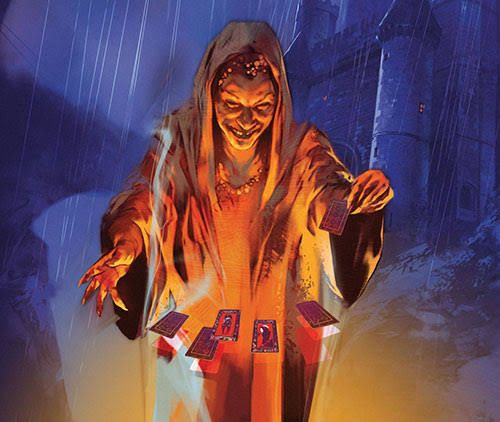
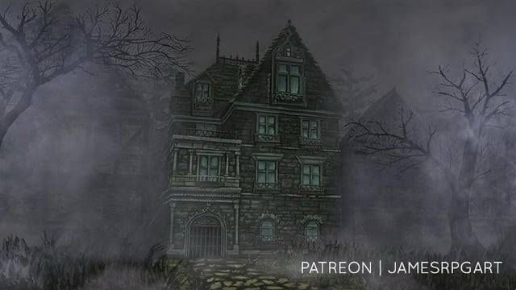
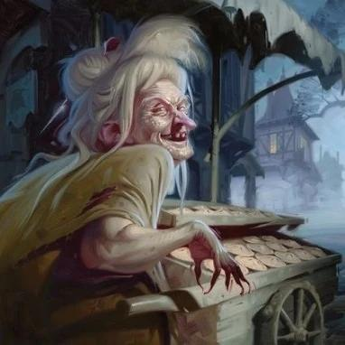

Curse of Strahd
(Sistema de RPG: D&D)
DM (Dungeon Master): Vini
Uma campanha de RPG de mesa ambientada no mundo de Ravenloft, onde os jogadores enfrentam o vampiro Strahd Von Zarovich e suas criaturas malignas. A história se passa na sombria e aterrorizante Baróvia, onde os jogadores devem desvendar mistérios, enfrentar horrores e lutar pela sobrevivência.
Personagens
- Peu - Porronto Runaférrea, O Mago Gnomo
- Pedro Neiva - Makar, O Bárbaro Golias
- Thigas - Erasmus/Viktor, O Ladino / Dhampir
- Guilherme - Thalindon, O Ranger / Cria Vampirica de Strahd
- Lucca Torres - Arnaldo, O Bardo / Licantropo
- Vh - Harien Butico, O Clérigo Aasimar
Strahd Von Zarovich
Sessão 1 - A Aventura começa
A JORNADA INESPERADA
Em uma bela noite de festa em Vaudaga, são apresentados um grupo de aventureiros bebendo e curtindo suas recentes conquistas. Um grande goliath de 2,40m de puro músculo ergue uma caneca em um brinde para seu grupo. Igualmente, um jovem elfo com vestes de couro e um pouco de lama e folhas em seu traje — talvez um ranger — faz o mesmo. Logo em seguida, um homem pálido com vestes escuras e rodeado por cicatrizes se junta ao brinde. Um belo humano grita e ergue sua taça: "Essa é por conta da casa! Aumenta o som, DJ!". É possível escutar uma voz fina, talvez de uma criatura pequena, dizer ao lado do Grande Makar: "Sai da minha frente, gorila! Não consigo alcançar as canecas!". A voz vem de um gnomo diferente dos demais, um gnomo com vestes de mago. Então, o último, mas não menos importante do grupo, um bardo, toca seu alaúde e traz melodia ao ambiente.
A cena corta para uma interrupção do jantar, vinda da duquesa de Vaudaga, chamando o exótico grupo para mais uma missão, nomeada "simples" para o grupo: expulsar os vistanos que se encontram na cidade, devido aos seus diferentes costumes e ao medo da população.
O INÍCIO
A comitiva chega até o acampamento onde se encontram os vistanos, já direcionando-se a uma negociação e "pedido" feito pela duquesa. Enquanto isso, Viktor, o ladino, espreita-se furtivamente pelo recinto, chegando até um conjunto de carroças. Ao vasculhar, percebe a existência apenas de suprimentos como vinho, comida e dinheiro. Porém, Viktor nota algo estranho nas moedas do grupo: em um dos lados da moeda, há um rosto não familiar, mas que o dhampir não consegue identificar. Assim, ele guarda uma consigo. Após o pedido feito pela comitiva, o grupo de ciganos parte de volta para sua terra, mas com uma condição: os aventureiros devem ajudá-los com um problema em suas terras. Butico, Porronto e companhia aceitam, por acharem ser algo simples e fácil para a "FORTE" equipe.
FORASTEIROS
Makar, pesado por degustar alguns vinhos, deita-se em uma das carroças, levando o pavio curto do gnomo consigo. O resto do grupo acomoda-se nas outras carroças, juntamente aos ciganos. Viktor, por sua excentricidade, prende-se de alguma forma estranha ao lado de fora da carroça. Após algumas horas de viagem, o grupo percebe a mudança na vegetação e natureza ao seu redor, entrando em um bioma extremamente cinza e sem vida, como se uma névoa os rodeasse. Viktor, por estar do lado de fora da carroça, reconhece aquele semblante da floresta como algo mágico.
"Aaaauuuu!" — uivos são escutados, deixando a comitiva da duquesa em alerta. Depois de alguns quilômetros percorridos, as carroças são forçadas a parar por algo na estrada. Thalindor, Porronto e Arnaldo (pelo que o narrador lembra) descem das carroças e decidem investigar, devido ao forte cheiro de morte. Assim, encontram o que está na estrada: corpos de cavalos destroçados e um homem segurando uma carta.
"Autópsia?", pergunta o bardo ao ranger.
— "Causas naturais", responde o gnomo, cortando a resposta racional do ranger.
BOAS-VINDAS
Depois de encontrarem os cavalos na estrada e uma carta endereçada à vila de Barovia — assinada por Kolyan Indirovich, o burgomestre morto — falando sobre sua filha estar doente, o grupo decide seguir viagem. Porém, deparam-se com a causa "natural" da morte dos cavalos: lobos. O grupo então entra em combate, mostrando pela primeira vez suas habilidades em luta. Com facilidade, lidam com aquela matilha de lobos selvagens e seguem viagem até o acampamento dos vistanos.
A BRUXA
Ao chegarem ao acampamento, a comitiva, antes mesmo de se instalar, resolve ir atrás de informações sobre aquele lugar e o que devem fazer ali para ajudar o grupo de ciganos. Assim, são apresentados a Madame Eva, uma velha senhora com semblante astuto e misterioso. Eva lhes apresenta o cenário em que estão: as terras de Barovia, uma terra gótica e perdida para as sombras. O objetivo do grupo é acabar com o mal que assola aquelas terras — a fonte de todo o mal, o lorde daquelas terras. Porém, ele não é um lorde qualquer, e sim um antigo e poderoso feiticeiro vampiro, conhecido como Strahd.
A velha se revela como uma bruxa e, na tentativa de "ajudar" o grupo, apresenta possíveis instrumentos que os auxiliem a derrotar o lorde, fazendo uma leitura de cartas. Após isso, ela teletransporta o grupo até a vila de Barovia. Lá, depois de investigações, a comitiva encontra uma casa "assombrada", de acordo com o povo da cidade, e decide entrar para fiscalizar os boatos. Antes de entrar, o bardo depara-se com duas crianças perdidas e assustadas e resolve ajudá-las, ficando para trás.
A CASA
O grupo desbrava a casa mal-assombrada. O gnomo, com seu espírito curioso maior do que seu próprio tamanho, decide separar-se e investigar o porão da casa sozinho. Thalindor, Butico, Makar e Viktor vasculham a casa e descobrem a existência de corpos — dois adultos que, ao que parece, eram aliados de Strahd, mas que, após não cumprirem uma ordem, tiveram esse destino. Os quatro guerreiros partem em direção ao sótão e encontram uma pilha de ossos de duas crianças, Cravo e Rosa.
O bardo, fora da casa, escuta os barulhos do combate vindo do porão e entra correndo para ajudar o grupo. Ao chamar as crianças para dentro da casa, elas negam. O bardo pergunta: "Vamos, por que não entram?". As crianças respondem ao músico: "Porque morremos aqui" — e somem em névoa, fazendo a porta se trancar.

Sessão 2 - A saga da Casa da Morte continua.
Após a entrada do bardo e a incrível revelação sobre as crianças, ele se encontra preso na casa mal-assombrada, onde só consegue escutar ventanias frias e sussurros sem um ponto de origem aparente — 'ele é o ancião, ele é a terra', repetidas vezes, até que barulhos de um combate são ouvidos no porão. Ao correr para checar o que é, o bardo se encontra com seu grupo de amigos lutando contra um bando de carniçais, enquanto o mago Porronto agoniza no chão.
MOMENTOS ANTES
Em meio à escuridão e aos sussurros sombrios, é possível ouvir apenas o cantarolar de um pequeno gnomo curioso. O mago Porronto encontra-se explorando o andar abaixo da casa, completamente sozinho, até que seu espírito de curiosidade o trai. Ouvindo grunhidos e respirações de seres não humanos — carniçais —, porém eles também o percebem. O pequenino se dá conta de que não há saída a não ser lutar. Então, em um pico de burra coragem, o mago invoca mísseis mágicos contra as criaturas e trava uma luta que, para ele, seria mortal. Após momentos de confronto, numa mordida brutal, Porronto tem seu braço arrancado pela besta. O mago cai no chão. Não é possível saber o que se passa na cabeça doentia do pequeno sociopata, porém, quando sua visão começa a ficar escura e sua respiração mais fraca, ao fechar os olhos, é possível escutar o rangido de lâminas e magias sendo ecoados pelo lugar. Porronto, ao abrir suas pálpebras achando que verá o Deus dos gnomos, se depara com uma cara angelical — ou seria diabólica? — de seu aliado Chico, o estabilizando. Vendo quem são seus salvadores: seus amigos.
A porta
O gnomo, não satisfeito com sua experiência de quase morte, decide partir, liderando o grupo em uma melhor varredura no local, assim chegando a uma espécie de corredor com aposentos e ficando novamente alone, pois se encantou com um quadro exposto no corredor, o fazendo sentir algo diferente em relação a ele. CORTA A CENA! O ladino, por seu faro e vício em surrupiar itens de outrem, decide procurar itens de valor pelos aposentos, assim encontrando uma espécie de mapa de entradas e compartimentos secretos. Após investigar uma dessas entradas, é surpreendido por três carniçais que estavam escondidos. O grupo se vê novamente em combate. Arnaldo, em uma tentativa de ajudar o ladino — que estava estrategicamente cercado pelas criaturas —, se torna o alvo e, de forma flanqueada, toma golpes que o deixam gravemente ferido. O clérigo, com um raio de luz, extermina um dos carniçais. Makar, com seu machado, consegue dar conta do outro facilmente. O terceiro carniçal, ao ver sua morte iminente, tenta golpear o bardo para levá-lo junto ao além-vida, até que sofre cerca de três golpes brutais no mesmo momento, efetivados por Thalindor. Novamente, o grupo está a salvo, porém Makar se dá conta da falta de um dos membros: 'O gnomo, cadê o gnomo?'.
O gnomo ainda se encontrava hipnotizado pelo quadro, até que decide tocá-lo. Quando seus pequenos e DESGRAÇADOS dedos encostam no quadro, uma grande boca surge, seguida de braços e olhos tortos. O gnomo grita: 'Eu sabia!!'. O mimico agarra Porronto, que grita por ajuda ao grupo, mas o mini-mago consegue se soltar com uma onda trovejante. Quando seus amigos chegam, o mimico havia sumido. Onde está ele? Após minutos de tensão, o grupo acha que ele havia ido embora. Porronto, de forma desprevenida, abre uma porta e encontra seu 'amigo' novamente, que o faz de refém. Butico, com um golpe incessante, consegue exterminar o mimico que havia sido ferido pelo grupo.
A Seita
O grupo se junta novamente, assim terminando de vasculhar a casa demoníaca e descobrindo que os que ali moravam faziam parte de uma seita que cultuava um tipo de entidade antiga, atiçando a fúria do lorde vampiro por não ser reconhecido como o único 'DEUS' que ali havia. O fim? Bom, algo não muito feliz.
A comitiva descobre uma entrada secreta que os leva a uma espécie de altar ritualístico antigo, e assim são postos à prova pela seita, antes de evaporarem em sombras: 'Um deve morrer'. O grupo, devido à sua ética e parceria, decide que não irá sacrificar ninguém. Assim, acordam algo: 'o ancião, a terra'. Um monte de lixo surge — algo vivo. Os aventureiros não esperam e logo decidem atacar.
O monte vederrante ataca primeiramente o pobre gnomo, que estava em seu dia de azar, quase o engolindo por inteiro, sendo salvo por seu cajado que entala na garganta do monstro. O grupo une forças para salvar mais uma vez seu 'mascote'. Viktor, o ladino, realiza uma acrobacia perfeita, cortando parte do braço da coisa. Makar aproveita os segundos em que o monstro abre a boca para rugir e retira o mini-suicida de sua epiglote, assim derrotando a criatura juntos.
Após conseguirem dissolver aquela espécie de culto paralelo, a casa amaldiçoada começa a desmoronar, os fazendo sair rapidamente dali e se encontrarem livres na vila de Barovia.

Sessão 3 - O Enterro
Livres para explorar a vila da Baróvia, o grupo visita a loja superfaturada de Bildrath, a casa de Maria Louca, a taverna Sangue da Videira, a Mansão do Burgomestre e a igreja.
Nesse percurso, conhecem Ismark e Irene Kolyana (a bela jovem atormentada pelo vampiro), filhos (embora Irene seja adotiva) de Kolyan Indirovich, o falecido burgomestre da vila.
Ismark quer levar sua irmã para um lugar seguro, que acredita ser a cidade de Vallaki, a cidade murada que todos julgam ser protegida do alcance do diabo Strahd. Em troca, oferece sua lealdade e um mapa de toda a Baróvia.
Antes de seguirem viagem, Irene deseja enterrar seu falecido pai. Assim o fazem, partindo em direção ao cemitério na igreja, precisando matar Doru, uma cria vampírica de Strahd e filho do padre Donavich. No calor do combate, Irene assassinou o acólito para se defender, o que a atormentou profundamente.
Após o enterro, o grupo presencia o fenômeno da Marcha dos Mortos, tão belo quanto assustador. Sabem que, em breve, serão eles marchando ao encontro de uma morte provável. Mas esse dia não é hoje. Nem amanhã. Por enquanto, a missão é deixar Irene à salvo, mesmo que isso traga a cólera do vampiro.
Sessão 4 - A Profecia de Madame Eva
Após deixarem a igreja, tendo descoberto sobre a Abadia de Santa Markova (que fica em Krezk), o grupo decide descansar na Mansão do Burgomestre. Ao sair pela tarde, se deparam com a megera Morgantha, que lhes vende Pastéis dos Sonhos, feitos com ossos de crianças portadoras de alma. Conquistam a simpatia da bruxa ao comprarem, fazendo com que ela revelasse que as "portas de âmbar" da leitura de cartas possivelmente se referem ao Templo de Ambar, que guarda "o maior segredo de Strahd".
Os aventureiros presenciam o assassinato de uma criança que foi entregue por pais viciados nos pastéis da megera. Por isso, se juntam para acabar com a vida da criatura desprezível. Em um último e certeiro golpe, Porronto, o Mago, evoca as caveiras mágicas, explodindo a criatura e reduzindo seus ossos a uma pilha de cinzas negras.
Finalmente, saem da Vila da Baróvia, acompanhando Irene e Ismark. Topam com uma tropa de caçadores barovianos comandada por Hans, um sujeito com segredos peculiares sobre "portas de âmbar". Ele relata que não conseguiu o vinho proveniente da vinícola Mago dos Vinhos em Vallaki.
Seguindo viagem, passam pela ponte de pedra e chegam em um bosque que, de acordo com lendas locais, era assombrado pelo espírito de uma moça de nome "Ivana" que, de acordo com as mesmas lendas, teve sua família destruída pelo vampiro e morreu nas mãos dos mesmos.
As lendas estavam certas. O grupo entra na cabana abandonada de Ivana, onde seus restos mortais jaziam com os dos seus filhos vampiros. Um combate se inicia a fim de acalmar o fantasma. Com isso, puderam lhe dar um enterro digno e a maldição se encerrou. Conseguiram descanso em uma região segura, algo raro na Baróvia.
No outro dia, a viagem foi muito mais tranquila pela manhã. Passaram dos portões do Oeste, chegando em um novo bosque pela noite. Foram enganados por um bando de "fogo-fátuos" que, embora insignificantes, foram chatos de lidar.
Após superarem o desafio, decidem descansar na floresta, quando são visitados por um misterioso e curioso vendedor de chapéus mágicos. Alegando se chamar Smirnogófi, o vendedor caiu nos encantos e ganhou a confiança dos aventureiros, até que se revelou ser o príncipe vampiro, Conde Strahd Von Zarovich.
Sua atitude de "ajudar" o grupo não parece fazer sentido. Será que acredita que os chapéus não funcionarão? Ou não serão suficientemente bons para ajudá-los a enfrentá-lo? Ou ele queria apenas deixá-los mais fortes para que pudesse ter um desafio a mais e, dessa forma, se divertir? Agora, é impossível saber.
Apenas se sabe que ele quer Irene Kolyana. Nesse dia, o grupo se mostrou digno da (mínima) atenção do Conde ao derrotar os dez lobos que se formaram a partir de sua forma humanoide. O vampiro recua, como um grande morcego voando sob a luz do luar, apenas para num outro dia retornar.
O tempo está correndo. O vampiro está a espreita. Espiões podem estar em cada esquina. Achar um lugar seguro não é mais uma opção, é uma NECESSIDADE. E, assim, o grupo segue no outro dia rumo a Vallaki.
No caminho, passam pelo Velho Moiossos. Um moinho castigado pelo tempo que abrigava uma laia de megeras da noite comandadas por Morgantha.
O bardo decide se passar por Morgantha, atuando de forma brilhante. Entra no moinho com o clérigo de (falso) refém. Essa estratégia, que surpreendeu as bruxas, e a morte da líder reverteram toda a situação a favor do grupo.
Após uma batalha que pendeu apenas para um lado da balança, a laia foi completamente aniquilada, vingando as milhares de crianças barovianas assassinadas a troco de "pasteis de sonhos".
Aqui se encerra a sessão 4. Há muito mais a se encontrar pela região. E a viagem para Vallaki se encontra cada vez mais próxima de seu fim.

Sessão 5 - Conspirações em Vallaki
Os aventureiros, acompanhados de Ismark e Irene, deixam o Velho Móiossos e continuam sua jornada para Vallaki. Após cerca de meio dia, durante a noite, chegam nos portões da cidade fortificada.
Os guardas tiveram grande resistência em deixá-los entrar. O ranger, perspicaz, encontrou uma brecha sem vigias no muro e invadiu. O restante conseguiu entrar acompanhando o Barão Vargas Vallakovich, um sujeito tenebroso e misterioso, para dizer o mínimo.
Dentro da cidade e sem olhos vigiando seus movimentos, Thalindon anda pela cidade, encontrando uma praça com cartazes que evidenciavam o “Festival da Cabeça de Lobo”, que ocorreu há um dia. Encontra dez vallakianos presos em berlindas, por terem ido contra o positivismo do Barão, com cabeças de burro esculpidas em gesso e presas a eles.
Apesar dos avisos, Thalindon segue sua boa moralidade e solta os prisioneiros, conduzindo-os para a brecha no muro. Entregou uma espada e cinco dias de ração. Dez plebeus viajando pela Floresta Svalich na noite da Baróvia... eles não devem sobreviver. Porém, ficar era assinar seu atestado de óbito.
O bardo, o bárbaro, o ladino, o mago (invisível), Irene e Ismark acompanharam o Barão até a sua casa, onde seus dois enormes Mastins aguardavam, onde guiou os três primeiros para seu escritório. O trato foi: “andem nos trilhos e digam que tudo vai ficar bem”, em troca da permissão para ficar na cidade e ostentar de sua segurança.
O mago Porronto, com sua enorme curiosidade digna de matar uma dúzia de gatos, sobe as escadas para o primeiro andar da mansão estando invisível, sem permissão e sem supervisão. Lá, Porronto encontra o quarto de Izek Strazni, o brutamontes capacho do Barão. Ele é enorme e possui um braço flamejante. Por algum motivo sombrio, o brutamontes coleciona bonecas Blinsky feitas a grande semelhança de Irene Kolyana. Por sorte, não acordou aquele ser, e conseguiu uma garrafa de vinho.
Ainda no andar de cima, ele conhece Victor Vallakovich, o filho do Barão, autodidata em magia, que possui como principal objetivo concluir sua magia de teletransporte para fora do inferno que é a Baróvia. Acredita que está fazendo algo de errado, e gostaria da ajuda de outro mago.
Após parte do grupo conversar com o Barão e Porronto se jogar da janela de Victor como um torpedo gnômico e destruir sua própria integridade física, seguem para a Estalagem Água Azul.
Nesse meio tempo, Thalindon, separado, caminha até o Armazém dos Arasek, uma mercearia e pátio de estocagem local. Compra alguns itens com Gunther, que vende tudo 4x mais caro que o normal. Ainda lá, decidiu averiguar uma carroça colorida, com o nome “As Maravilhas de Rictávio” plotado.
Dentro da carroça, um grande Tigre Dentes-de-Sabre. Thalindon tem a habilidade de se comunicar com bestas, descobre que ele se chama Tigreso e foi treinado por “Rictávio, o bardo”, para devorar Vistani. O tigre revela a verdadeira identidade do seu mestre, revelando seu conjunto de caçador de monstros. Rictávio era, em verdade, Rudolph Von Richten, o lendário caçador de monstros. Ele precisava contar isso para os seus amigos.
A Estalagem estava relativamente cheia de brutamontes, provavelmente caçadores, que estavam sendo entretidos por um bardo que contava uma história sobre “goblins siameses”. Irene e Ismark, cansados, decidem se sentar em uma mesa.
O ladino e o bardo do grupo decidem conhecer essa figura interessante, que descobre tratar se de Rictávio, um jovem meio-elfo bardo que vestia um chapéu engraçado. Maquiagem escondia algo em seus braços. Quando o bardo faz uma gracinha e tira (por pouco tempo) seu chapéu, a forma jovem se vai e surge um homem velho e carrancudo. Ele se recolhe em seu quarto, e é seguido pelo ladino.
Nesse meio tempo, o mago, o bárbaro e o clérigo conversam com Urvino Martikov, o dono da estalagem. Ele permite que fiquem quantas noites precisarem e lhes oferta vinho de boa qualidade de graça, desde que ajudem com um assunto: ir até a Vinícola Mago dos Vinhos para descobrir o que há de errado, pois remessas novas não chegam há tempos.
No quarto de Rictávio, há uma intensa discussão, que chama a atenção do restante do grupo. No momento que o ranger chega na estalagem e revela para os outros que Rictávio, na verdade, era o caçador de monstros, eles decidem entrar no quarto e entender o que está ocorrendo.
Rudolph Von Richten conta a sua história. Era um banqueiro que teve seu filho, Erasmus, raptado por bandidos Vistani para ser entregue a um lorde vampiro numa terra conhecida como Baróvia. Descobrir isso levou anos, muitas torturas e perseguições e combates contra monstros, e nesse caminho, foi amaldiçoado por uma velha vistana: “Todos os que você ama irão morrer”.
Conseguiu uma mentoranda: Ezmeralda D’Avenir, uma vistana ímpar, guerreia feroz. Ela deve estar na sua torre.
Acreditava que seu filho estava morto, até agora. Essa explicação desbloqueia memórias na mente do ladino Dhampyr. Ele era Erasmus. E agora tudo fazia sentido.
Conta que, quando chegou, tentou matar o vampiro. Não conseguiu, mas conseguiu fazer uma vela com seu sangue, que revela sua presença. Ela se encontra na torre. Também relata ao grupo sobre o Mago Louco do Monte Baratok, sobre sua carroça e sobre luzes roxas saindo da janela do sótão da Mansão do Barão.
A sessão se encerra quando, ao cantarolar uma música que seu pai lhe ensinou na infância, Erasmus prova ser realmente o filho desaparecido de Von Richten, trazendo uma grande confusão para a mente velha do lendário caçador de monstros.
Sessão 6 - Explorando Vallaki
O grupo de aventureiros sai da Estalagem Água Azul e parte para a exploração da cidade fortificada de Vallaki, separando-se.
As Peripécias do Mago Nanico
- Porronto foi até a Mansão do Burgomestre para ajudar seu amigo Victor a construir um portal que o levaria para fora de Vallaki.
- De alguma forma, o portal construído o levou diretamente para um precipício no Castelo Ravenloft, onde o vampiro Strahd Von Zarovich o aguardava.
- Victor foi empurrado do precipício, caindo de uma altura que lhe promoveu uma morte brutal. O mago foi enxotado de volta pelo portal, e foi fechado magicamente.
- Porronto ficou arrasado e passou a maior parte da sessão em luto por seu amigo, jogado no chão do seu estúdio.
A Descoberta do Culto
- O restante do grupo foi até a Wachterhaus, lar de Lady Fiona Wachter, seus dois filhos bebuns que a odiavam, sua filha alucinada e seu espião, Ernesto.
- Descobriram que Fiona era a maior inimiga do Barão Vargas e tinha uma forte ligação com o vampiro, o cultuava juntamente com cidadãos de Vallaki em seu porão.
- A mágica que os cultistas acreditavam ocorrer no centro do pentagrama era, na verdade, fruto das peripécias de um pequeno diabrete de estimação da Wachter, Majesto.
- Ao tentarem enganar Fiona entregando o coração do seu falecido esposo dizendo ser o do filho do Barão, responsável pelo enlouquecimento de sua filha, e ela perceber, ela os envia para uma armadilha.
- Parte do grupo se ausentou e foi visitar a Igreja de Santo Andral, enquanto parte ficou no local e executou todos os cultistas presentes, juntamente com a líder do culto. Majesto se refugiou em algum lugar.
A Igreja de Santo Andral
- Na Igreja, conhecem Padre Luciano Petrovich e seu coroinha mudo Miquéias.
- Descobrem que os ossos do padroeiro, São Andral, foram roubados, e a igreja se encontra desprotegida para ataques de criaturas da noite. E a noite estava chegando.
- O responsável pelo furto foi Milijov, o jovem coveiro. Enfeitiçado, ele informa que os roubou e vendeu ao fabricante de caixões da cidade, que pagou 10 PO.
- Precisavam encontrar os ossos antes de uma possível invasão ocorrer.
Caindo na Arapuca
- O grupo parte para a loja de caixões, onde um vendedor nada amigável estava sem um pingo de disposição para abrir a porta.
- O ladino e o ranger conseguem invadir por uma janela no primeiro andar. Sobem para procurar pelos ossos, pois não estavam no andar de baixo.
- Ao abrir um dos caixotes no andar superior, Thalindon se depara com uma criatura repugnante e fria, estava morta. Quatro crias vampíricas estavam descansando ali, aguardando o momento para executar um plano maligno e sinistro.
- No momento que a batalha começa, os outros integrantes do grupo chegam e interrogam o vendedor de caixões sobre a arma que poderia matar Strahd, informação dada pela Fiona Wachter, claramente enviando-os para serem mortos pelas crias vampíricas em um último golpe a favor do Lorde Vampiro.
Sessão 7 - A Invasão de Vallaki
A sessão se inicia com um combate equilibrado entre as crias vampíricas e o grupo de aventureiros. Durante a ação, o mago Porronto encontrou os ossos roubados de São Andral. Após serem eliminadas, o grupo sabia o que teria de fazer: correr para a igreja antes da noite cair, e ela estava caindo rapidamente.
A caminho para a Igreja
- Bardo, mago, ladino e ranger correram o mais rápido que puderam. Chegaram na igreja a tempo, embora o ladino tivesse caído no meio do caminho.
- Ao cair, o ladino percebe que sombras humanoides se movimentavam no telhado das casas. Estavam perseguindo o grupo? Ou apenas indo para o mesmo lugar?
A Chegada na Igreja
- Ao chegarem, percebem que diversos plebeus, adultos e crianças, estão buscando refúgio na Igreja de Santo Andral.
- Ao mostrarem que conseguiram os ossos para o padre, ele os chama para que os coloquem no devido local e inicia o rito de oração para promover proteção.
- O padre afirma que isso é um ato de pura fé, pois a igreja nunca havia sido atacada antes
- Porronto e Erasmus decidem sair.
- Após o rito, trancam as portas da igreja com Porronto e Erasmus do lado de fora, e a noite cai.
A chegada do Diabo Strahd
- Olhos vermelhos nos telhados das casas penetram as almas de Porronto e Erasmus, à medida que algo sombrio, cruel e monstruoso se aproxima seguindo a rua principal de Vallaki.
- A cada passo, os postes se apagavam, fazendo com que vissem o rosto da criatura somente quando ela estava muito, muito próxima.
- O vampiro Conde Strahd Von Zarovich estava na frente do mago e do ladino. Saudou-os com um educado “Boa noite”, e pediu licença para passar.
- Erasmus num lapso de fúria com um grande desejo de vingança e um sentimento de ódio mortal apenas avançou. Mas ele ainda não era páreo para o lorde.
- Seus golpes não surtiam efeito. Era lento. Era fraco. O vampiro se divertiu com ele. No final de sua brincadeira mortal, Erasmus estava no chão, brutalmente ferido e com sua moral jogada no lixo.
- Porronto seria poupado, e arrastou a carcaça de Erasmus, entre a vida e a morte, para o mato em volta da igreja, até que lançou um feitiço no vampiro.
- Strahd estava sem paciência, apenas ordenou que suas crias, que vigiavam de cima, descessem e cuidassem do mago.
- Ao pedir para entrar na Igreja e ter seu pedido negado, para o assombro de todos, entrou. Sim, ele era um vampiro, mas ele é o governante supremo de toda a Baróvia. Tudo pertence a ele. Logo, é ele quem deveria dar permissão para alguém entrar.
O Massacre
- Quando o clérigo e o bárbaro chegaram, era tarde. O massacre havia começado
- Com crueldade, Strahd ignorou quase que inteiramente todos os outros membros do grupo, focando nos moradores de Vallaki.
- Primeiro, assassinou o padre Luciano. Depois, chacinou os plebeus, independentemente de sua faixa etária, e, quando se cansou, foi embora de barriga cheia, deixando apenas um convite para que os aventureiros jantassem com ele em seu castelo.
Após a meia noite
- A igreja estava inundada em sangue.
- O clérigo conseguiu ressuscitar alguns dos plebeus, dentre eles o padre, tudo para descobrir uma verdade chocante: nem mesmo mortos podem deixar a Baróvia. Suas almas circulam no ar, presos pelas brumas em um cárcere fora da realidade.
- O padre perdeu sua fé e seu pequeno coroinha mudo o seguiu, saindo de Vallaki, rumo a lugar nenhum.
- Dois homens corvo haviam se juntado a luta, e recomendaram que fossem encontrar Urvino Martikov, pois algo grande estava para acontecer em decorrência dos acontecimentos dessa noite. Mais pessoas iriam morrer.
Sessão 8 - A Revolução
O grupo entende que uma guerra civil está para ocorrer. Urvino informa sobre a resistência ao domínio do Barão, composto pelo Prelado da Pena em conjunto com plebeus indignados e dotados de coragem, que planejava um golpe para tirá-lo do poder.
Sangue na Praça
- Após um descanso longo curar as feridas da noite anterior, o grupo parte para a casa do Barão para entender como poderiam resolver a situação.
- Erasmus não acompanha o grupo. Precisaria de um tempo para lidar com o gosto amargo de uma derrota tão humilhante.
Ao chegarem na Praça, em frente a casa do Barão, percebem que a população revoltada já estava tentando invadi-la, impedidos por guardas da cidade. - Quando o Barão Vargas tentou fazer seu discurso positivista, uma pedra o acertou precisamente na cabeça, e ele ordenou que os guardas matassem todos os presentes.
- Enquanto os guardas brigavam com a população em revolta, Izek e outros guardas avançavam contra o grupo, culpando-os de terem soltado os prisioneiros na praça há duas noites.
- Irene Kolyana e Ismark souberam do que ocorreu e foram encontrar o grupo, acabando por se juntarem ao combate.
- Irene descobre que é irmã do brutamontes assassino Izek, sendo tomada pela negação, repulsa e ódio de ser irmã de uma criatura tão maldosa. As histórias que ouviu sobre o gigante da mão de fogo em sua estadia na estalagem a fizeram criar o mais profundo desprezo por aquele criminoso que se intitulava chefe da guarda.
- O combate termina quando Izek é executado juntamente com seus guardas, e o bardo convence os guardas e plebeus a pararem de se atacar.
Lidando com o Barão
- Ele e sua mulher eram completamente loucos e fanáticos pela ideia do positivismo. Embora não fossem do time do Strahd, faziam o mal por outra via.
- O Barão foi entregue às mãos de Urvino Martikov, nominado o novo burgomestre de Vallaki, que precisou fazer a justiça do povo e decapitar o monstro positivista na frente da população, sendo aplaudido por seu ato, embora por dentro não se sentisse bem em fazer aquilo.
Gadolfo Blinsky, o criador de brinquedos
- O clérigo descobre uma passagem subterrânea no quarto de Izek que leva para a loja de brinquedos Blinsky, onde Gadolfo criava as bonecas a grande semelhança de Irene Kolyana, que tomava conta dos sonhos de Izek.
- Acompanhado de seu amigo Piccolo (o macaco que lhe foi dado pelo bardo que chegou na cidade há pouco mais de um mês), revela-se membro da resistência e fica feliz com o resultado da revolução.
- Ao descobrir que o grupo sobreviveu a um ataque do Strahd e que eles foram convidados para o castelo, pede que encontrem o brinquedo do lendário criador Von Der Weerg e o tragam inteiro e funcional: Pildwick II, uma criação tanto fabulosa quanto perigosa.
A Revelação de Von Richten
- Von Richten se revela para Urvino, que agora é o burgomestre de Vallaki, e solicita que se unam em um ataque contra os vistani que acampam perto de Vallaki.
- O grupo se une ao caçador e seu tigre, bem como a Urvino e alguns homens corvo, marchando em direção ao acampamento, prontos para o ataque, mas querendo sondar o que está ocorrendo ali.
Os Elfos Crepusculares
- Porronto enfeitiça um dos guardas das cabanas, um elfo crepuscular, que não revela muita coisa, mas pede que fale com seu chefe: Kasimir Velikov.
- Ao falar com Kasimir, um elfo crepuscular sem orelhas e que vestia um anel de proteção contra o frio, descobre a história de seu povo e seu objetivo: sua irmã fora uma das mulheres perseguidas por Strahd e seu povo a matou por isso. Tomado de ódio, Strahd matou todas as mulheres do povo, fadando-os a morrerem, sem procriarem sua espécie.
- Kasimir sonha com sua irmã e acha que ela se arrependeu de ter caído nos encantos do vampiro, acreditando que deve ressuscitá-la e que a chave para isso está no Templo de Âmbar. Pede que o levem quando forem até lá.
Arrigal e Luvash, os irmãos metralha
- Com uma encenação digna de oscar, o bardo, o clérigo e o bárbaro entram na tenda se passando por vistani / invasor que estava sendo contido.
- A encenação foi tão boa que, por um breve momento, fez com que os irmãos acreditassem que o grupo estava no mesmo time que eles.
- Pediram que encontrassem a filha de Luvash que estava sumida, sumiço que é motivo da punição de Rodolfo, o jovem que está com suas costas desfiguradas após chibatadas do Luvash.
Inspirados por Jesus, andaram sobre as águas
- Nas margens do lago Zarovich, perto de Vallaki, o grupo procurou pelo paradeiro de Arabella, até que encontraram um barco com um sujeito estranho pescando.
- Ao se aproximarem ANDANDO SOBRE AS ÁGUAS, percebem que o sujeito não interage com eles e apenas chuta um pacote no lago.
- O pacote era Arabella. Bluto, um pescador bêbado e desalmado (literalmente), acreditava que conseguiria pegar ao menos um peixe sacrificando uma vida para o Senhor da Pesca.
- Após salvar Arabella, o grupo segue para o acampamento, mas não antes do mago Porronto mandar Bluto correr durante uma hora sem rumo e sem descanso. Deve ter morrido para os lobos, caso um infarto não o tenha matado antes.
O plano cai por terra
- Salvar Arabella trouxe ao grupo a gratidão de Luvash, mas um grande deslize entregou que eram infiltrados: o bardo se mostrou arrependido de estar em comunhão com o lorde vampiro.
- Arrigal saiu rapidamente a cavalo para alertar seu lorde, enquanto Luvash ganhava tempo para que os bandidos vistani entrassem na tenda e encurralassem o grupo.
- Alguns minutos depois, cavalgando em seu Pesadelo, o Conde Strahd Von Zarovich chega para mais uma noite de diversão. Um grande combate se inicia.
A batalha contra os vistani do mal – e seu mestre
- Strahd pode sentir que os aventureiros estavam, sim, mais fortes. Cada golpe que recebeu o fez sentir isso e mais: o fez sentir-se feliz. Seu riso maligno denotava isso.
- Após alguns momentos, ele deixou o combate fadando os vistani daquele acampamento a morte.
- O grupo foi vitorioso, e pouparam a vida de Luvash e Arabella, que fugiram a cavalo para algum lugar distante.
Acesse o link para assistir o video da sessão 8!! NOVO LIDER NA BAROVIA! | Maldição de Strahd - Sessão 8🎲 | RPG DE MESA - YOUTUBE
Sessão 9 – Jantar com o Vampiro
Introdução
- Após ajudarem a tomar Vallaki das mãos de um barão tirano e expulsar os bandidos Vistani aliados ao Lorde Vampiro das redondezas da cidade, o grupo conquista o respeito e gratidão dos moradores e o perdão interno de Urvino Martikov.
- Agora possuem uma casa na Baróvia, um lugar (aparentemente) seguro e confortável para chamar de seu, uma calmaria no meio de um pesadelo. A Casa do Barão está em posse de Porronto, o mago, que adiantou os impostos de um ano inteiro, esbanjando riqueza.
A Carruagem
- O grupo se depara com uma carruagem negra, movida por dois pesadelos e guiada por um cocheiro macabro. São convidados de forma incisiva a entrarem e se dirigirem para o jantar ao qual foram convidados. O lorde da Baróvia não gosta de esperar.
O Jantar
- Após uma longa e confortável viagem, chegam ao Castelo Ravenloft. A ponte se abaixou para permitir a passagem dos aventureiros pelo abismo que o circunda com uma palavra proferida pelo cocheiro: “Ravenovia”.
- O grupo adentra o Castelo, deixando apenas Erasmus do lado de fora. São guiados por Rahadin, mordomo de Strahd, para o Salão de Jantar, onde o vampiro tocava músicas sinistras em seu Órgão.
- O jantar estava excelente. As comidas favoritas de cada um estavam postas à mesa. Isso renovou o espírito dos que se alimentaram bem.
- Strahd teve a oportunidade de conhecer mais um pouco dos personagens. Estava gostando daquele momento. “Não me resta humanidade, mas momentos como esse me fazem sentir ser humano novamente”.
- Erasmus foi abordado por uma mulher invisível que depois se revelou ser Ezmeralda D’Avenir, a pupila de Von Richten, seu pai.
- Juntamente com Ezmeralda, entrou no Castelo. Sua escolha de explorá-lo sem ser convidado desencadeou uma luta pela sobrevivência. Gárgulas, filhotes de dragão, e as esposas de Strahd logo se juntaram.
- O que era para ser um jantar pacífico, um momento de relaxamento entre o Lorde Vampiro e seus convidados, tornou-se uma corrida para a sobrevivência após Thalindon assassinar uma das esposas do vampiro.
- Agora ele precisa de uma nova esposa. E jurou busca-la em breve.
Acesse o link para assistir o video da sessão 9!! O JANTAR! | Maldição de Strahd - Sessão 9🎲 | RPG DE MESA- YOUTUBE
Sessão 10 – Na Boca do Lobo
Na Boca do Lobo
Após o encontro frustrante com Strahd, o grupo se reagrupa na torre de Ezmeralda e Von Richten, reencontrando também Smark e Irene por lá, assim recarregando suas forças e remendando seus equipamentos.
Ao anoitecer, os aventureiros se aconchegam na improvisada estalagem. Thalindor, o patrulheiro, decide ficar a postos em vigia do perímetro pela noite. Durante o descanso, o grupo recebeu uma premonição vinda do Baralho do Destino, que sinalizava que eles deveriam agir com mais sabedoria e calma ao traçarem seus planos. O grupo não reconheceu de imediato o significado do tarô, mas logo saberiam do que se tratava.
Ao amanhecer, os guardas (Thalindor, o Dragão e o Texugo) avistaram um grupo de homens estranhos carregando carroças com seres que se aproximavam. O ranger, ao fazer seu reconhecimento estratégico, percebeu que a carga que levavam eram três crianças. Os estranhos homens perceberam a observação do Texugo e, assim, puseram fim à sua curta vida.
A equipe tentou elaborar um plano para uma negociação pacífica com o grupo de forasteiros. Porém, descobriram que se tratava, na verdade, de uma alcateia de licantropos aliada ao Lorde Vampiro.
O COMBATE
A comitiva não encontrou outra alternativa a não ser o combate contra a alcateia. O ranger e o ladino, por serem ágeis e rápidos, logo desferiram os primeiros golpes, dando início ao conflito. Após alguns momentos de luta, o líder da alcateia atacou o bardo brutalmente, deixando-o gravemente ferido. Porém, no limiar entre a vida e a morte, por sorte (ou azar), seu organismo, em um último recurso de agonia, sofreu uma mutação, transformando-o em algo novo: já não era mais totalmente humano, nem totalmente monstro — um limbo, um lobisomem.
Ao levantar com uma fúria sanguinária, o bardo, em forma de besta, atacou tudo à sua frente de forma instintiva e irracional. O ladino, assustado ao ver seu amigo tornar-se uma fera e perder a sanidade, lembrou-se de seus episódios no Castelo Ravenloft, quando era mais novo, e viu como única alternativa imobilizar a criatura que considerava seu amigo, na esperança de controlar sua mente perturbada.
Ao fim do combate, o grupo salvou as crianças sequestradas e obteve informações sobre a localização do covil dos lobos. Assim, as enviaram, juntamente com o lobo Artroz ("Scooby-Doo"), para Vallaki, ao encontro de seu antigo aliado e novo líder da cidade, Urvino, na esperança de que ficassem seguras por enquanto.
O PORTAL
No período pós-combate, enquanto se preparavam para ir até o covil ("Boca do Lobo"), Makar, Butico e o mago Porronto tiveram a brilhante ideia de testar seus aprendizados e abrir um portal, usando o lobo inimigo capturado como cobaia. Assim, arremessaram-no pela fenda, que demonstrava um bioma e clima diferentes dos de Baróvia: neve. O portal estava localizado no topo de uma montanha, com uma grande ponte de pedra em evidência — esta foi a última visão do pobre licantropo, que sofreu uma queda livre.
O mago, então, decidiu descer, com uma corda amarrada ao torso e usando Makar como âncora, atirando-se em direção ao abismo. Uma brisa fria entrou pelo portal, apagando as velas da sala. "BOOM!" — o portal se fechou, cortando a corda que segurava o curioso mago, levando-o a uma queda não muito alta, mas ainda assim dolorosa. O grande gnomo encontrou-se em uma espécie de ninho, deparando-se com uma ave gigante saboreando os restos da pobre cobaia.
O grupo entrou em desespero, preocupado com o bem-estar do mago. Subitamente, uniram forças e intelecto (que até então lhes faltavam) e conseguiram reabrir o portal, com o objetivo de resgatar seu querido mascote. No fim, todos estavam a salvo, congelados e furiosos com a grandiosa ideia originada pelo mago.
O COVIL
Ao chegarem ao covil, Thalindor partiu furtivamente para reconhecer o terreno, encontrando duas crianças sendo forçadas a lutar até a morte. O patrulheiro salvou os bravos jovens de forma excepcional, nocauteando-os e tirando-os dali e os enviando também até Urvino, juntamente com uma pantera percussionista como seu protetor.
O bardo, o ladino e o mago adentraram a caverna, esperando executar um plano: manipular e aliar-se à alcateia. Após muito diálogo, o bardo provocou uma revolução e uma nova votação para eleger um novo alfa. Reuniu votos a seu favor, mas não contava com a presença de Otávio, o lobo mais apto ao cargo.
Enquanto isso, o bárbaro e o clérigo, que aguardavam do lado de fora, perderam a paciência e decidiram entrar. Logo de início, avistaram mais quatro crianças enjauladas e partiram para o resgate.
Otávio, cansado da burocracia, desafiou o novo membro da alcateia para um duelo. Tochas se acenderam, e um grande círculo foi formado. Arnaldo deparou-se com um lobisomem de cerca de 2,20m de altura. Porém, o carismático bardo, devido à sua transformação, revelou um novo lado: confiante e instintivo.
Otávio não esperou e partiu em direção ao beta. O bardo, com reflexos mais rápidos e apurados devido tanto à sua nova forma física quanto aos incríveis buffs fornecidos por Butico e Porronto, esquivou-se do golpe do colosso e, com apenas um ataque, explodiu-o com uma rajada de trovão emanada de suas entranhas. O golpe foi tão forte que bastou para aniquilar sua existência, eternizando a bravura do jovem bardo. Assim, ele ganhou influência e prestígio suficientes para nomear a nova alfa da alcateia, a licantropa...
A CIDADE
Após conquistarem novos possíveis aliados contra Aquele Que Não Deve Ser Nomeado, o grupo parte para a cidade de Ez..., junto com as quatro crianças que o bárbaro e o clérigo "adotaram", em busca de novas informações e estadia. Chegando ao portão da cidade, o grupo, por sua falta de alinhamento e má leitura do Barão, não consegue entrada na cidade de...
O bardo percebe que o Barão está escondendo algo ao outro lado do portão, tentando descobrir e persuadi-lo a seu interesse. Porém, Erasmus e Thalindor, de forma astuta, conseguem atravessar a muralha da cidade devido à falta de guardas nela, assim investigando mais sobre o local. O ranger percebe gritos vindo da abadia no alto da colina, carregando sua dupla investigativa até lá.
(Continua)
Acesse o link para assistir o video da sessão 10!! Na Boca do Lobo! | Maldição de Strahd - Sessão 10🎲 | RPG DE MESA YOUTUBE
Sessão 11 – A morte chega para todos
A MORTE CHEGA PARA TODOS
Em meio à chuva forte, parte do grupo ainda se encontra no portão de entrada da cidade de Krezk. A chegada do barão apenas aumenta a desconfiança sobre o que os portões escondem. Então, o bardo, usando sua magia, se comunica telepaticamente com o líder da cidade, perguntando o que ele está escondendo. O homem responde de forma quase clemente: "Eu não o conheço, mas ele... ele..." — até que uma figura sai do meio das folhas e arbustos: um homem bem-vestido, alto e imponente, que carrega consigo uma aura estranha e tensa.
Makar conversa com um pequeno texugo, que o alerta sobre dois membros curiosos seguindo em direção à abadia. O homem misterioso, com voz aveludada, diz: — "Boa noite, visitantes". O gnomo fica quase hipnotizado por ele, mas Butico, o clérigo, sente algo familiar naquela presença. Makar, Arnaldo, Porronto e Harien entram portão adentro, seguindo o barão e "O Abad" até a casa do representante da cidade. Ao chegarem, se deparam com uma cena forte: a esposa do barão chora, apoiada sobre um corpo frio em cima da mesa — seu filho. O corpo, já bastante decomposto, mostra que havia morrido há tempos. No entanto, Makar, Harien e Arnaldo presenciam algo estranho — O Abad, com facilidade, traz o jovem de volta à vida, exigindo em troca uma promessa do barão: um vestido de noiva. Os três forasteiros acham aquilo estranho e questionam o ser, que os convida a ir até a abadia, prometendo respostas.
A Batalha Colina abaixo
Erasmus, Thalindor e seu dragão partem furtivamente em direção à abadia no alto da colina, tendo uma conversa profunda enquanto sobem:
- Erasmus: — Vi que seu braço está diferente. Como arranjou isso?
- Thalindor: — Foi quando fiquei na estalagem... longa história.
- Dragão: — Ele arrancou do Izek, cara! E depois arrancou o próprio fora pra pôr no lugar.
- Erasmus: — Caramba, você realmente faz tudo pra ficar mais forte, né?
- Thalindor: — Sim. Um dia serei tão poderoso que poderei matar um terrasque sem nem mover um dedo.
- Erasmus: — Acredito que nosso "amigo" vampiro tinha o mesmo sonho. Cuidado com o que deseja, elfo.
Antes que Thalindor possa responder, são surpreendidos por um grande raio. Erasmus, mesmo parcialmente morto, sente sua espinha congelar. A atmosfera pesa. Eles olham na direção do raio, mas não veem nada. Ao se voltarem novamente ao caminho, ele está lá — o lorde vampiro, empunhando sua espada, com um semblante diferente do habitual. Sem piadas, sem sarcasmo. Ele não se quer esboça um sorriso.
O combate começa. Erasmus, em choque, ataca e erra. Thalindor, sabendo que não têm chance sozinhos, conjura uma névoa e puxa o ladino para dentro, tentando garantir uma chance de fuga. Porém, o inimigo, impaciente, conjura uma lufada de vento, empurrando-os colina abaixo. Os dois rolam monte abaixo, e o vampiro os segue com sede insaciável por sangue, mostrando sua força real.
Strahd arremessa sua espada, que parece ter vida própria e sede de sangue. Ela fere Erasmus gravemente. Em uma tentativa desesperada, a sombra viva de Erasmus tenta segurar a espada para protegê-lo, mas falha e é dissipada. A espada ataca novamente, matando o dhampir e decepando parte de seus membros, deixando-o à beira da morte. Thalindor ordena que o dragão leve Erasmus e, mesmo em desvantagem, parte sozinho contra o vampiro. Erasmus, à beira da morte, relembra todos seus fracassos, enfraquecendo ainda mais sua vontade. Sua última visão: Thalindor diante de Strahd, praticamente derrotado.
Sangue e presas
Porronto encontra Erasmus e consegue estabilizá-lo e acordá-lo. Porém, o ladino está tão abalado que não consegue explicar o que aconteceu. Butico, Makar, Arnaldo e Abad chegam, salvando o dhampir completamente. Em um lapso de fúria e confusão, Erasmus tenta correr de volta à abadia, mas está tão fraco que cai na lama e sangue. O grupo percebe que Strahd e o elfo sumiram. Arnaldo tenta rastrear e encontra um rastro subindo o monte. O ladino corre à frente e ouve sons na floresta. Lá encontra Thalindor em um tipo de ritual diante de uma cova, queimando parte de seus pertences.
Erasmus percebe que algo está errado e tenta se aproximar, mas Thalindor o ataca — revelando presas e olhos vermelhos. Erasmus o golpeia e o amarra, imobilizando-o para a sessão de interrogatório. Butico conjura uma zona da verdade e o grupo interroga Thalindor, agora uma nova cria vampírica de Strahd. Desconfiam de traição, mas Thalindor revela que tentou esconder informações de Strahd, o que provocou sua fúria e o levou a ser transformado como punição.
Abadia de São Markovia
O grupo decide deixar o problema de Thalindor de lado por ora e segue até a abadia, em busca de respostas ligadas à leitura de cartas da Madame Eva. Butico e Makar seguem Abad, que os deixa em uma sala. Makar percebe um grande painel de sol preso à parede e sinaliza ao clérigo. Discretamente, Makar cobre Butico com seu corpo enquanto o clérigo examina o painel. Com sua ligação ao deus do sol, Butico percebe uma magia por trás da parede. Porém, Abad retorna, e os dois voltam às suas posições.
Durante o diálogo, descobrem que Abad é um celestial enviado para matar Strahd, mas que, ao ver seu poder, decidiu adotar uma postura passiva, acreditando que seria melhor ajudá-lo do que enfrentá-lo. Abad exige que tragam o vestido de noiva em até 3 dias, para Tatiana II (não perguntem sobre a primeira). O grupo aceita. O gnomo, com sua habitual ousadia, insulta o celestial, que em dois golpes fulminantes mata o gnomo — e depois o ressuscita, agora com Parkinson como efeito colateral.
Após o acordo, Butico examina o painel com permissão e encontra um amuleto solar, cujo poder ainda é desconhecido.
Paz entre batalhas
Antes de chegarem a Vallaki, a comitiva se depara com um gnomo velho, desorientado e falando coisas desconexas. Butico, movido pela compaixão, usa um feitiço de restauração — e, em um instante, a loucura se dissipa. O que parecia um velho lunático se revela como Mordenkainen, lendário arquimago... e avô de Porronto.
A revelação surpreende a todos. O reencontro entre avô e neto é carregado de tensão e mistério. Porronto exige respostas: por que desapareceu? O que o trouxe à Baróvia?
Mordenkainen revela que chegou ali anos atrás, contratado pelo próprio Abad para matar o pai de Butico. Ao abrir um portal, foi tragado por forças desconhecidas — e caiu direto no castelo de Strahd Von Zarovich, onde travou uma batalha épica. Feitiços colossais foram lançados, mas no último instante, Strahd ricocheteou uma magia e o lançou rio abaixo, encerrando sua memória e mergulhando-o na loucura... até agora.
Ele fala de suas glórias, de sua arrogância, e da suspeita de que todos os portais mágicos da Baróvia estão sob influência de Strahd.
Porronto então revela sua dor: sua vila destruída, sua família desaparecida, e o nome de Maltraxis — o mago das sombras. Mordenkainen promete que terão essa conversa... mas ainda não é o momento.
Agora, com novas verdades reveladas e uma promessa no ar, os heróis seguem, em silêncio, rumo a Vallaki.
Após o encontro com o talvez lendário e poderoso mago Mordekainen, avô de Porronto. A comitiva corre até Vallaki, acreditando que Strahd pode ir atrás de Irena. Lá, vão direto à casa central da cidade, onde haviam mandado seus aliados. Deparam-se com uma cena pacífica: Ismark conta uma história para três crianças, enquanto duas outras lutam com cabos de vassoura — até que Makar intervém: — "O que eu avisei sobre brigar?" — e as crianças largam as "armas" e se abraçam. Ezmeralda lê livros de Victor na janela.
Butico pergunta sobre Irena. Ismark informa que ela foi ao cemitério visitar o túmulo de Izek. Butico, Makar, Arnaldo e Thalindor partem em busca dela. Thalindor nota olhos vermelhos nos telhados e algo se movendo rapidamente. Enquanto isso, Porronto, no estúdio de Victor, escuta batidas na janela e vê... Victor. O gnomo se surpreende. Victor, agora um vampiro, pede permissão para entrar. O gnomo resiste, mas acaba cedendo. Victor entra e consome a vela de sangue do cajado de Porronto, dizendo que aquilo foi necessário para poder fugir da Baróvia, a mando de Strahd.
Com Irena de volta, todos se reúnem em volta da lareira. Porronto está prestes a contar o que viu. Enquanto isso, Erasmus está com Van Richten, que lhe entrega um presente para igualar as forças com as criaturas da noite — uma arma, uma fusão de engenharia, alquimia e magia, batizada de *Harum Scarum
Com o grupo seguro por ora, planejam os próximos passos. Todos se recolhem para descansar. Mas Thalindor, solitário, permanece no telhado da casa, olhando para o céu nublado da Baróvia, perdido em pensamentos: — “Será que reconquistarei a confiança dos meus amigos?” — Uma pergunta que só o tempo poderá responder.
(Continua)
Acesse o link para assistir o video da sessão 11!! A morte chega para todos! | Maldição de Strahd - Sessão 11🎲 | RPG DE MESA
Sessão 12 – Vinícola do Mago dos Vinhos
O Casamento e a Batalha na Vinícola
A noite cai sobre Vallaki. O silêncio da madrugada envolve a cidade, mas nem todos repousam em paz.
Butico, em meio ao sono, é tomado por uma visão intensa: o amuleto que encontrou aparece em seu sonho, envolto em caos. Um ataque brutal à abadia. Um monstro — sua forma indefinida, mas presença sombria — leva consigo uma mulher que carregava o mesmo amuleto. Tudo indica que ela seria ninguém menos que Santa Markova. A sensação de urgência e mistério o desperta suado e inquieto.
Na mesma madrugada, Makar também é tocado por forças além do véu. Em sonho, uma voz ecoa, poderosa, IMPONENTE. O ser o chama. O grandioso bárbaro escuta, mas aceitará o chamado?
Enquanto isso, Arnaldo, com sua audição apurada pela maldição da licantropia, capta movimentos sutis pela casa. Ao despertar e investigar, analisa os cheiros da residência. Tudo parece em ordem... até perceber a ausência de Irene e Ismark. Preocupado, ele desperta os demais. Embora a intenção fosse deixar o ranger isolado, seus sentidos aguçados pela transformação não o deixaram passar despercebido. Ele se une ao grupo em busca dos irmãos desaparecidos.
Seguindo o faro de Arnaldo, chegam ao cemitério, onde encontram Ismark procurando por Irene. Logo ela surge, saindo de um arbusto em aparente transe. Erasmus tenta chamá-la, mas ela não responde. Ele se aproxima e, ao observá-la, percebe sangue em suas botas — sangue que não pertence a ela, pois seu corpo está intacto, sem um arranhão sequer. Arnaldo, ao cheirar o sangue, o reconhece: é sangue celestial. Seria de Abade? E como teria Irene sangue divino em suas botas?
Sem respostas claras, o grupo decide seguir adiante com suas missões. Antes de partirem rumo à Vinícola do Mago dos Vinhos, uma melodia cerimonial rompe o silêncio da manhã — uma música de casamento!
O Casamento
Em meio ao caos e perigos da Baróvia, uma chama se acendeu entre dois corações: o amor. Harien e Arnaldo já não podiam esconder sua paixão, e decidem tornar público o segredo que guardavam com tanto carinho — estão noivos e desejam se casar o quanto antes!
Irene e Ezmeralda se empolgam com a novidade e correm para preparar a cerimônia. Porronto, com entusiasmo, se encarrega do bolo. Makar, com toda sua sensibilidade (e músculos à mostra em sua batina sem mangas), se prontifica a celebrar o matrimônio. Thalindon e Erasmus são os padrinhos. Tudo está pronto.
Butico, nervoso e ansioso, espera no altar. Erasmus e Thalindon mantêm-se sérios, porém comovidos. A música começa. As crianças riem e brincam, mas Ismark e Van Richten observam incrédulos. Irene e Ezmeralda conduzem Arnaldo, agora assumindo a forma de uma bela noiva. Butico, ao vê-l(x), arregala os olhos e sussurra: “Até que esses 2CA valeram a pena”, com um sorriso travesso.
Makar conduz a cerimônia com pompa e respeito, selando a união com um beijo apaixonado. O amor, mesmo em terras sombrias, floresce.
De Volta ao Dever
O grupo retorna à realidade. Há missões a cumprir. Rumo à Vinícola do Mago dos Vinhos, Porronto envia uma carta à cidade de Krezk, buscando notícias sobre Abade e os recentes acontecimentos com Irene. Urvino, ao saber do destino do grupo, entrega uma missão secreta a Porronto, que deverá cumpri-la discretamente.
Durante a viagem até a vinícola, são surpreendidos por bandidos. Porém, ao verem o imponente Makar, os assaltantes hesitam. Antes que possam reagir, Thalindon, tomado por uma fome bestial, teletransporta-se para trás de um dos criminosos e o devora com uma mordida letal, arrancando parte de sua traqueia e pescoço. Os outros, apavorados, fogem e deixam para trás um saco com 500 peças de ouro, prontamente "coletadas" pelo ladino.
Ao se aproximarem da vinícola, avistam um homem próximo a uma árvore acenando. É Adriano Martikov, filho do proprietário. Ele questiona a presença do grupo e os leva até Daviano Martikov. Ao ouvir o nome, Porronto explode em insultos, incitado por Urvino — embora mais exaltado do que o recomendado. Ele logo se desculpa: Urvino só mandara um xingamento, mas ele se empolgou.
O grupo percebe a conexão: Adriano é pai de Urvino, ambos da família Martikov, marcada por relações conturbadas. Apesar disso, Adriano pede ajuda com uma infestação de insupragas nas redondezas.
Quando a comitiva de Erasmus chega à frente da Casa dos Vinhos, são surpreendidos por pequenas criaturas feitas de raízes saindo dos arbustos. À primeira vista, pareciam fofas e amigáveis, fazendo o grupo questionar se aquelas seriam realmente o "problema". No entanto, o ladino rapidamente reconhece a semelhança das pequenas criaturas com os insupragas (seres gerados por magia de druidas sombrios).
Ao perceber o perigo, Erasmus, num impulso, chuta o máximo possível delas para longe e lança uma de suas bolas de gude mágicas, invocando um gigantesco alce. Com isso, o combate tem início.
Os pequeninos, que até então se mostravam inofensivos, revelam garras e dentes afiados. Thalindon e Arnaldo revidam, mostrando suas presas. Butico e Porronto preparam suas magias e, com um poderoso ataque conjunto, exterminam metade das criaturas. Makar, com seus quase três metros de altura, elimina várias apenas caminhando e pisoteando as miniaturas.
Então, um druida emerge de dentro da casa. Erasmus, já esperando por isso devido ao vínculo mágico entre as pragas e seu conjurador, saca rapidamente sua nova arma: Harum Scarum. Ele recita palavras que ativam suas runas, que brilham intensamente antes de disparar contra o druida. O projétil mágico acerta a testa do inimigo com precisão mortal. A magia radiante, alimentada pela bênção divina e pelas runas, percorre o crânio do druida, que começa a emitir luz por todo o corpo até explodir em pura energia, sangue e entranhas.
Mais druidas e insupragas maiores surgem dentro da casa. Makar, por estar distante da entrada, simplesmente atravessa a parede com força bruta, surpreendendo os inimigos. Thalindon entra correndo pelo teto, desafiando a gravidade. Ele puxa um dos druidas do chão até o telhado, partindo-o ao meio e finalizando os restos com chamas violentas — "fogo pra car@#$", como ele mesmo definiria.
"E PELA PRIMEIRA VEZ"
Butico, ao entrar na casa durante o conflito, ainda se encontrava pensativo sobre sua visão e amuleto, assim viajando e transgredindo entre o real e o irreal. Uma hora se via como Harien, porém em flashes via-se como um sobrevivente na abadia, talvez pela visão de Santa. Harien lutava vorazmente contra aqueles pequenos seres, talvez até mais do que deveria. O clérigo, em sua mente, trava uma batalha pela sua sobrevivência contra dezenas de crias vampíricas e algo pior, algo forte e rápido... o monstro ao qual sentiu a presença em seu sonho, porém não conseguia nem mesmo ver seu rosto, somente seus ataques.
Se viu em desvantagem em sua visão e realidade, suando pelas palmas das mãos, com seus pelos arrepiados, o clérigo pensou "O que faço? O que está acontecendo?". Pela primeira vez, o destemido semideus sentiu... medo!
Harien mal percebeu quando os pés deixaram o chão. Em um impulso de fuga, abriu as asas para voar, mas algo o agarrou. Uma massa viscosa e pulsante — as insupragas — o puxou com força cruel de volta ao chão, como garras vivas saídas do próprio pesadelo. E então tudo começou a falhar. O mundo tremulava diante de seus olhos, como se a realidade fosse um véu rasgado pelo tempo. As paredes da casa oscilavam, ora madeira, ora pedra. Ora ruína, ora abadia. O cheiro de sangue e mofo invadia suas narinas, mesclado ao incenso sagrado de tempos esquecidos.
Imagens atravessavam sua mente com violência:
— Crianças chorando ao fundo.
— E o som... o som de algo correndo.
Rápido demais para ser visto. Mas próximo. Tão próximo, e então, o monstro.
Não o via, mas seu corpo sabia que estava ali. A presença era como uma garra pressionando a mente, esmagando sua clareza. Seus olhos tentavam captar a forma — falhavam. Cada vez que fixava o olhar, era empurrado de volta para outra visão: um corte na lateral, profundo. Harien gritou. Não havia nada — apenas dor.
Outro ataque. Um impacto no estômago.
As insupragas não paravam. Cravavam-se em sua pele, em seus nervos, em sua fé. Rasgavam não só seu corpo, mas sua esperança. As raízes agora o trespassavam como lanças vivas. O mundo escureceu, o sangue escorria deixando o clérigo à beira da morte.
Porém, graças à proteção do Deus do Sol e à bravura do grupo, eles conseguem derrotar as raízes do problema. Harien é estabilizado e salvo, e como recompensa do destino.
Porronto conquista o cajado do líder druida, que ele guarda consigo para estudos e, talvez, uso futuro.
Assim, Adriano pede aos jovens aventureiros uma lista de itens para a volta da fabricação dos vinhos.
O Corvo e a Carta
Quando todos começam a relaxar após a intensa batalha, um corvo negro surge, pousando silenciosamente próximo ao grupo. De seu bico, ele solta uma carta que cai aos pés de Porronto. O gnomo, curioso, pega o envelope e o abre.
A mensagem era a resposta à carta que Porronto havia enviado para Krezk, buscando notícias sobre a cidade e seus habitantes.
O conteúdo era curto, mas carregado de um presságio sombrio:
"Krezk está vazia, não há ninguém.
- ps: Vazia demais."
O silêncio paira entre os aventureiros, enquanto o peso da notícia cai sobre eles, encerrando a sessão com um misto de apreensão e urgência.
(Continua)
PARTE 1
Acesse o link para assistir o video da sessão 12 - Parte 1!! Mago dos Vinhos - Parte 1! | Maldição de Strahd - Sessão 12🎲 | RPG DE MESA - YOUTUBE
PARTE 2
Acesse o link para assistir o video da sessão 12 - Parte 2!! Mago dos Vinhos - Parte 2! | Maldição de Strahd - Sessão 12🎲 | RPG DE MESA - YOUTUBE
Sessão 13 – A Colina
(Continua)
Acesse o link para assistir o video da sessão 13!! A Colina! | Maldição de Strahd - Sessão 13🎲 | RPG DE MESA - YOUTUBE
Sessão 14 – A Bruxa de Berez
(Continua)
Acesse o link para assistir o video da sessão 14!! A Bruxa de Berez! | Maldição de Strahd - Sessão 14🎲 | RPG DE MESA - YOUTUBE
Sessão 15
Sessão 16
Ireena Kolyana - Destaques
Ireena, a corajosa filha de Kolyan Indirovich, tornou-se uma peça central na luta contra Strahd, mostrando força e determinação em meio à adversidade:
- Sessão 1: Revelada como alvo de Strahd, ela insistiu em proteger sua vila, recusando-se a ser vista como uma vítima.
- Sessão 3: Participou do enterro de seu pai, mostrando resiliência e força diante da perda familiar.
- Sessão 5: Demonstrou bravura ao enfrentar criaturas próximas ao Lago Zarovich, ajudando a proteger os aldeões.
- Sessão 7: Resistiu à influência de Strahd durante o ataque à igreja de São Andral, servindo como inspiração para os outros.
Ireena simboliza coragem e esperança, recusando-se a ceder ao desespero, mesmo sendo o foco das atenções sombrias de Strahd.
Ismark Kolyanovich - Destaques
Ismark, o irmão protetor de Ireena, mostrou-se um líder disposto a sacrificar tudo pela segurança de sua família e do povo de Baróvia:
- Sessão 1: Pediu ajuda ao grupo para proteger Ireena e honrar o legado de seu pai, Kolyan Indirovich.
- Sessão 3: Liderou a defesa da vila de Baróvia contra as forças das trevas durante o enterro de Kolyan.
- Sessão 5: Acompanhou o grupo até Vallaki, mostrando sua habilidade em combate e diplomacia.
- Sessão 7: Lutou bravamente ao lado do grupo na defesa da igreja de São Andral contra crias vampíricas.
Ismark é um líder nato, combinando força, coragem e lealdade para proteger aqueles que ama e resistir ao domínio de Strahd sobre Baróvia.
Rudolph Van Richten - Destaques
Rudolph Van Richten, o lendário caçador de monstros, emergiu como um aliado vital para o grupo, oferecendo sua sabedoria e experiência contra as forças das trevas de Baróvia:
- Sessão 5: Revelado como Rictavio, um bardo disfarçado em Vallaki, começou a observar e avaliar o grupo enquanto investigava as atividades do Barão Vargas.
- Sessão 7: Ofereceu conselhos estratégicos durante o ataque à igreja de São Andral, orientando o grupo sobre como enfrentar crias vampíricas de forma eficaz.
- Sessão 8: Apoiou a revolução em Vallaki com um plano tático para desestabilizar as forças do Barão Vargas, ajudando a proteger civis inocentes.
- Sessão 9: Partilhou conhecimentos vitais sobre Strahd e seus aliados, ajudando o grupo a se preparar para o jantar no Castelo Ravenloft.
Van Richten é um estrategista brilhante e um mentor dedicado, cujo compromisso em derrotar Strahd reforça a determinação do grupo em sua luta pela liberdade de Baróvia.
Kolyan Indirovich - O Patriarca Honrado
Kolyan, figura respeitada da vila de Baróvia, cuja morte marcou o início de eventos sombrios que desencadearam a jornada do grupo:
- Sessão 1: Mencionado como líder da comunidade local, cuja proteção era vital para o equilíbrio da vila.
- Sessão 3: Seu enterro foi um momento de tensão, seguido pelo confronto com a cria vampírica Doru, um sinal das forças sombrias que assombram a região.
A memória de Kolyan impulsiona o grupo a confrontar os horrores que tomaram Baróvia, buscando justiça e paz.
O Conto do Dragão Vermelho
(Sistema de RPG: D&D)
DM (Dungeon Master): Peu Porronto
Após meses desbravando os perigos de Neverwinter , suas habilidades chamaram a atenção de ninguém menos que Dagult Brasanunca , o influente Lorde Protetor da cidade. Ele os contratou para uma missão incomum: localizar uma equipe de caçadores de recompensa conhecida como Hard Way , que fugiu com algo de grande valor para ele. Sua instrução era clara — tragam-nos de volta vivos e sem ferimentos.
Personagens
- Victor - Mestre Chan Shifu, um Monge Humano
- Thigas - Mol'el Stars, um Gnomo da Floresta Artificer
- Guilherme - Thorin Morgran, Clérigo da Luz Anão da Colina
- Vini - Olivando Erebor, Mago Humano
Sessão Única - O Conto do Dragão Vermelho
Após meses navegando pelos perigos de Neverwinter, cinco heróis, cada um com sua própria história e habilidades, chamaram a atenção de Dagult Brasanunca, o influente Lorde Protetor da cidade. Mith Varloc, o feroz bárbaro meio-orc; Mol’el Stars, o engenhoso artífice gnomo; Thorin Morgran, o clérigo anão da luz; Mestre Chan Chifu, o disciplinado monge humano; e Erebor, o mago élfico sagaz, foram convocados para uma missão singular. O objetivo: localizar a equipe de caçadores de recompensas conhecida como Hard Way, que havia fugido com algo de grande valor para o Lorde. A ordem era clara — trazê-los de volta vivos e ilesos.
Uma Jornada Misteriosa
Após semanas de rastreamento, os heróis descobriram que o grupo Hard Way fora visto pela última vez na misteriosa Pousada Inn Plain Sight, conhecida tanto por sua localização remota quanto por sua clientela peculiar. Ao amanhecer, eles partiram rumo à estalagem, sem saber o que os aguardava. O destino, porém, parecia entrelaçar suas vidas, pois até então eram completos estranhos.
A chegada à pousada revelou um ambiente repleto de segredos. Merry Rumwell, o estalajadeiro, recebeu o grupo, mas sua presença emanava desconfiança. Posteriormente, ele se revelou como Ervan Soulfallen, um feiticeiro traiçoeiro. Durante a investigação, os heróis enfrentaram mímicos no andar superior e descobriram tesouros escondidos, mas Ervan escapou usando um portal dimensional.
Segredos na Floresta
Explorando a área externa da pousada, o grupo se dividiu. Enquanto Mith investigava uma árvore peculiar, os outros enfrentavam um urso-coruja em perseguição a aranhas gigantes. Após resolverem a situação, encontraram dois miconídeos, Mico e Lídio, que lhes forneceram informações cruciais. Eles revelaram a traição de Ervan, a captura do draconato Alax Jadescales, e a existência de uma porta secreta atrás da árvore.
Com uma chave recuperada do esconderijo das aranhas, os heróis abriram a porta e desceram até as masmorras. Lá, enfrentaram um cubo gelatinoso e três pudins negros. Durante a busca, encontraram o crânio de um membro do grupo Hard Way e, usando um pergaminho de Falar com os Mortos, descobriram a trama de Ervan: o feiticeiro contratara o grupo para roubar o ovo do dragão Cinderhowl e, após o roubo bem-sucedido, traiu e assassinou os aventureiros.
Revelações e Encontros
Após libertarem Alax, que revelou que sua pantera deslocadora, Pouncy, havia sido transformada em um observador, os heróis continuaram sua exploração. No porão, encontraram os esqueletos animados dos outros membros do Hard Way, que pediram descanso eterno em troca de informações valiosas e itens mágicos. Seguindo para a torre, recuperaram Pouncy e reverteram sua transformação.
No topo da torre, encontraram o Orbe da Draconidade, um artefato mágico capaz de convocar dragões. Quando o monge tocou o orbe, uma visão aterrorizante se manifestou: Cinderhowl, o dragão vermelho, estava a caminho. Ervan tentou deter os heróis, mas escapou novamente por um portal.
O Rugir do Dragão
Ao alcançar o último andar, os heróis se depararam com o ovo de Cinderhowl cercado por velas. Nesse momento, o rugido de Cinderhowl ecoou pelo ar. O dragão adulto atacou a torre, causando caos. Durante o embate, o clérigo foi arremessado para o prado e ficou inconsciente, enquanto os outros se esforçavam para escapar.
Quando Cinderhowl finalmente pousou, os heróis, liderados por Erebor, convenceram o dragão de que não eram responsáveis pelo roubo. O dragão revelou um rancor profundo contra Dagult Brasanunca, mas aceitou temporariamente a explicação dos heróis. Antes de partir com seu ovo, Cinderhowl deixou um aviso sombrio sobre seu possível retorno a Neverwinter.
Ervan tentou aproveitar a distração para atacar, mas foi derrotado pelo grupo e, em um ato final, queimado por Cinderhowl. No entanto, o dragão partiu sem levar o Orbe da Draconidade, que ficou sob a posse dos heróis.
O Confronto Final
Retornando a Neverwinter com Ervan como prisioneiro, os heróis apresentaram sua versão dos acontecimentos a Dagult Brasanunca. Quando a natureza do Orbe foi revelada, recusaram-se a entregá-lo, temendo seu uso. A tensão culminou em um confronto, e o Lorde ordenou a prisão dos heróis
Dias após sua captura, um portal se abriu na cela dos heróis, acompanhado de uma voz misteriosa: "Ei, vocês aí." Assim, um novo capítulo de sua jornada se anunciava.
O Fim de um Começo
Os heróis não apenas sobreviveram aos desafios, mas deixaram suas marcas em uma história ainda a ser completamente revelada. O futuro, cheio de mistérios, aguarda aqueles dispostos a encarar seus perigos.
Prisioneira 13
(Sistema de RPG: D&D)
DM (Dungeon Master): Peu Porronto
No mundo de Toril, nos confins congelados ao norte da Costa da Espada, encontra-se uma fortaleza impenetrável construída para abrigar os criminosos mais perigosos da região. Uma das detentas desta prisão, uma anã conhecida como Prisioneira 13, passa seus dias aparentemente quieta e solitária. Ela tem a chave de um tesouro que roubou de um clã de anões. Neste assalto, os personagens devem se infiltrar na prisão, recuperar a chave da Prisioneira 13 e devolver a chave para Varrin Quebra Machado, o anão que os contratou.
Personagens
- Victor - Mestre Chan Shifu, um Monge Humano
- Thigas - Mol'el Stars, um Gnomo da Floresta Artificer
- Guilherme - Thorin Morgran, Clérigo da Luz Anão da Colina
- Vini - Olivando Erebor, Mago Humano
Parte 1 - O Início
A sala de guerra em Neverwinter estava carregada de tensão. Dagult Brasanunca entrou com sua presença autoritária, vestindo seu manto azul-escuro e botas impecavelmente polidas. Dois guardas o seguiam, carregando mapas e pergaminhos. A luz oscilante das velas fazia as sombras dançarem enquanto o Lorde Protetor analisava os aventureiros com um olhar severo.
Dagult Brasanunca: "Vocês provaram ser úteis... até certo ponto. Mas o caos em Neverneath exige estratégias separadas."
o destino do grupo foi traçado sob as palavras severas de Dagult Brasanunca. Enquanto Erebor e Thorin eram destacados para ir ate a casa do conhecimento estudar sobre uma magia estranha que se estendia por neverwinter, Chifu e Mol'el Stard receberam ordens de permanecer na prisão, aparentemente afastados da missão principal.
Mas o destino nunca foi algo que seguisse planos tão simples.
Dagult Brasanunca: "Vocês não possuem o conhecimento necessário para essa missão. Fiquem onde estão... e tentem não causar problemas."
O Estranho Som na Cela
Quando o silêncio da tarde foi quebrado por um som metálico, Chifu e Mol'el rapidamente notaram algo incomum. Na cela subterrânea, com luz filtrando pela pequena janela gradeada, Mol'el foi levantado para investigar.Lá fora, um vulto anão desaparecia nas sombras, deixando para trás uma caixa de música enigmática. Quando Mol'el abriu o objeto com sua chave dourada, a mensagem misteriosa os convocou para uma missão grandiosa: infiltrar-se na prisão Fim da Farra, desvendar os segredos da Prisioneira 13 e entregar as informações a Varrin Quebra Machado.
Quando a chave se dissolveu em névoa dourada, os dois sabiam que algo maior os aguardava.
A Proposta de Varrin
Na calada da noite, Varrin Quebra Machado, com sua presença imponente e uma seriedade de aço, surgiu na prisão de Neverwinter.Varrin: "O destino colocou essa missão diante de vocês. Há grandes riquezas em jogo, mas também perigos além da imaginação. A escolha é sua, mas saibam que desistir agora significa deixar o mundo perder algo inestimável."
Com mapas mágicos e a promessa de disfarces elaborados, Chifu e Mol'el aceitaram o desafio.
Rumo a Luskan
Na mesma madrugada, os dois deixaram Neverwinter e viajaram até Luskan, uma cidade envolta em neblina e segredos. Lá, encontraram Bethra, uma espiã anã de natureza caótica, mas com coração altruísta.Bethra: "Se vão para Fim da Farra, precisam de disfarces. Guardas, cozinheiros, tanto faz, contanto que saibam como interpretar seus papéis."
Com uniformes fornecidos e instruções claras, eles se apresentaram ao navio Jolly Pelican na madrugada seguinte. O destino os levaria 350 milhas ao norte, em uma viagem de três dias repleta de expectativa.
Os Disfarces: Remi e Shoyo
Na tripulação do Jolly Pelican, Chifu e Mol'el assumiram suas novas identidades.Chifu, agora chamado Shoyo, tornou-se um cozinheiro observador e discreto, atento a cada detalhe do ambiente.
Mol'el, sob o nome de Remi, abraçou sua nova persona com a curiosidade natural de um gnomo, pronto para explorar cada canto da prisão.
Bethra garantiu-lhes que a equipe substituída estava em segurança, mas o peso do plano era claro: se falhassem, suas vidas estariam em jogo.
RUMO A FIM DA FARRA
A bordo do Jolly Pelican, durante a viagem rumo à prisão Fim da Farra, Shoyo (Chifu) e Remi (Mol'el Stard) conheceram Kamar, um veterano soldado da prisão. Entre histórias sobre a segurança impenetrável de Fim da Farra e as lendas do Panóptico, Kamar compartilhou detalhes valiosos sobre a rotina e os desafios da prisão.Na segunda noite, Shoyo desafiou Kamar para um duelo de resistência alcoólica. A competição atraiu a atenção de toda a tripulação, mas, após várias rodadas, o soldado veterano sucumbiu à bebida, desmaiando sobre a mesa. Aproveitando a oportunidade, Remi furtou o escudo de Kamar, guardando-o como uma possível ferramenta para a missão.
Com Kamar inconsciente pelo restante da viagem, os dois aventureiros usaram o tempo para revisar os mapas e reforçar suas coberturas. Quando o navio atracou, as torres sombrias de Fim da Farra se erguiam à frente, marcando o início de uma jornada perigosa, já repleta de astúcia e improviso.
Parte 2
Chegada em Fim da Farra
Ao desembarcarem na prisão de Fim da Farra, Shoyo (Chifu) e Remi (Mol’el Stard) foram designados imediatamente para o primeiro turno na cozinha. Lá, conheceram Chefe Tiny Toulaine, um homem corpulento e jovial que liderava o espaço. Entre panelas fumegantes e conversas triviais, os dois começaram a explorar o ambiente, já preparando o terreno para o que viria.O Encontro com o Espectador no Arsenal
Enquanto Remi explorava o arsenal, deparou-se com um Espectador, uma criatura esférica com olhos vigilantes que guardava as armas da prisão como seu tesouro. O Espectador não reconheceu o gnomo e ordenou que ele saísse imediatamente. Remi recuou, mas o Espectador relatou o incidente telepaticamente a um guarda, levando ambos à sala da guarda.Enquanto isso, Shoyo aproveitou a ausência do Espectador para explorar o arsenal vazio. Lá, encontrou uma escotilha secreta que levava ao telhado da torre. Usando sua força, preparou um baú carregado de armas, posicionando-o como parte de um plano futuro.
Encontro na sala da guarda e Reunião no Refeitório
Na sala da guarda, Remi foi interrogado sobre o incidente. Usando sua lábia, convenceu os presentes de que não representava ameaça, escapando sem maiores problemas. Reunindo-se com Shoyo no refeitório, os dois compartilharam suas descobertas.O Plano Caça-Rato: Kamar e o Disfarce
No refeitório, Kamar, o guarda veterano que conhecera durante a viagem, informou que iniciaria uma patrulha em 20 minutos. Aproveitando a oportunidade, os aventureiros bolaram o Plano Caça-Rato: envenenar Kamar para roubar suas vestes e usá-las como disfarce.Remi preparou uma comida envenenada enquanto Shoyo distraía Kamar, que caiu inconsciente logo após comer. Os aventureiros notaram um símbolo de olho na palma da mão esquerda de Kamar , algo intrigante e desconhecido para eles. Disfarçados, levaram Kamar ao hospital, mas desviaram para o Panóptico para investigar.
No Hospital e a Revelação na Diretoria
Após deixar Kamar no hospital, encontraram Roger, o médico, e Machado, seu assistente. Enquanto Shoyo distraía Roger, Remi vasculhou o local, encontrando um frasco de veneno e um pergaminho de Imobilizar Pessoa.Os aventureiros persuadiram os guardas a levá-los até a diretoria, onde conheceram Marta Marthannis, a diretora de Fim da Farra. Durante a conversa, mencionaram o símbolo na mão de Kamar, o que claramente a abalou. Ela usou uma pedra de mensagem para reportar o ocorrido a um contato misterioso, mas recusou-se a revelar mais informações.
Antes de saírem, Shoyo notou uma tatuagem no antebraço da diretora: uma harpa aninhada entre os chifres de uma lua crescente , o símbolo dos Harpistas, uma facção secreta que luta contra o mal nos bastidores.
Uma Segunda Voz
Antes de deixar a sala, Remi jogou uma pedra mágica com o poder de escutar à distância. Mais tarde, ouviram a diretora conversando com um homem de voz rouca sobre a tatuagem de Kamar e sua ligação com um grupo desconhecido. Ambos mostraram preocupação, mas o conteúdo da conversa permaneceu enigmático.O Futuros os aguarda
Com novos segredos revelados, pistas desconexas e um plano ainda em execução, Shoyo e Remi sabiam que a missão estava apenas começando. Entre a diretora ligada aos Harpistas, o símbolo na mão de Kamar e as intrigas do Panóptico, Fim da Farra se mostrava um terreno repleto de mistérios e perigos.Parte 3
A Entrada na Central de Vigilância
Após descerem pela escadaria da torre central, Shoyo (Chifu) e Remi (Mol'el Stard) chegaram à Central de Vigilância, o coração da segurança da prisão. O local era repleto de guardas atentos, um console mágico que controlava as celas e o nível de luz no Panóptico, além de um alto-falante que podia transmitir ordens pela prisão inteira.O ambiente era tenso, e a presença dos dois chamou atenção. Após observarem brevemente o funcionamento do console e o comportamento dos guardas, eles foram dispensados e ordenados a retornar à cozinha, com o aviso claro de não causarem problemas.
Plano de Distração: O Encontro com a Prisioneira 13
Com a ordem dos guardas ainda ecoando, os dois bolaram um plano arriscado. Shoyo fingiria se machucar, distraindo os guardas, enquanto Remi aproveitaria para se infiltrar no Panóptico e localizar a Prisioneira 13.Shoyo simulou uma lesão convincente, atraindo dois guardas para ajudá-lo. Enquanto isso, Remi, com sua pequena estatura e habilidade de se esconder nas sombras, deslizou furtivamente em direção às celas.
À medida que avançava pelo corredor mal iluminado, Remi passou por várias celas, cada uma identificada com uma placa descrevendo o prisioneiro, seu crime e sua sentença.
Os prisioneiros eram:
- Gallia Strand: Contrabandista de luxo, cumpriu 6 anos de uma sentença de 10 anos.
- Barlo Rageblade: Famoso aventureiro, condenado por perigo imprudente, cumpriu 2 anos de 5.
- Quillion Sardo: Halfling, usou magia para influenciar outros, cumpriu 2 anos de 5.
- Pirouette: Tiefling e líder de uma guilda de ladrões, cumpre prisão perpétua há 12 anos.
- Ishar: Elfo conspirador, condenado à prisão perpétua há 20 anos por conspiração para assassinar membros da família nobre do reino de Vallerian.
- Grix: Goblin espião, cumpriu 3 anos de 10.
- Ervan SounFallen: (Feiticeiro derrotado pelos aventureiros na aventura anterior), condenado pela morte da equipe aventureira Hardway, roubo de artefato de posse de lorde Dagult Brasanunca, conspiração de associação ao culto do dragão. Cumpriu 8 dias da sentença de 60 anos.
A Cela da Prisioneira 13
Finalmente, ele encontrou a cela da Prisioneira 13, marcada por um ar de mistério e imponência. Dentro, a figura de uma anã musculosa, com cabelos ruivos curtos e tatuagens rúnicas brilhando levemente à luz fraca, observava calmamente.Remi se aproximou com cuidado, tentando iniciar uma conversa rápida, ciente do perigo iminente. Ele sabia que cada segundo era crucial antes que os guardas percebessem sua ausência e investigassem.
O Enigma da Prisioneira Desconhecida
As sombras no Panóptico pareciam ganhar vida enquanto Remi se aproximava da cela. A figura da prisioneira estava parcialmente oculta, sentada em um canto, com a luz fraca acentuando as linhas das tatuagens rúnicas que cobriam seus braços. Prisioneira 13, como todos a conheciam, ergueu os olhos, avaliando o gnomo com um sorriso frio e calculado.Remi (sussurrando): "Você sabe por que estou aqui. Não perca o meu tempo e nem o seu. A chave... precisamos da chave."
Ela o encarou por um longo momento, os olhos faiscando com desdém.
Prisioneira 13 (calma, mas cortante): "E o que exatamente você pensa que sabe sobre mim? 'Prisioneira 13'? Um título conveniente, não acha? Mas eu não sou apenas um número."
Remi hesitou, mas sabia que ceder agora seria perigoso. Ele precisava manter o controle da situação.
Remi: "Então, como devo chamá-la? Qual é o seu verdadeiro nome?"
A anã ergueu uma sobrancelha, inclinando-se para frente, permitindo que as luzes tocassem seu rosto coberto de cicatrizes leves e olhos que pareciam esconder segredos profundos.
Prisioneira 13: "Meu nome? O que você faria com ele? Os nomes têm poder, gnomo. E, neste lugar, poder é algo que mantenho muito bem guardado."
Remi viu uma oportunidade e pressionou mais.
Remi: "Se não quer dizer seu nome, então diga o que precisamos fazer para conseguir a chave. Você sabe que não temos tempo a perder."
Ela soltou uma risada curta, quase debochada.
Prisioneira 13: "Quer a chave? Muito bem. Mas nada vem de graça. Há algo que preciso. No escritório da diretora, há um livro... o Livro da Razão. Ele contém todos os nomes, crimes e sentenças dos prisioneiros desta fortaleza. Traga-me esse livro, e quem sabe... possamos conversar sobre essa chave."
A Revelação no Hospital
Do outro lado da prisão, Shoyo entrava no hospital, onde o caos reinava. Roger e Machado pareciam tomados por uma mistura de pânico e perplexidade.Roger (desesperado): "Ele desapareceu! Um clarão de luz e... simplesmente se foi!"
Shoyo (frio, mas curioso): "Quem desapareceu?"
Roger apontou para uma cama vazia no canto da sala, o colchão ainda afundado pelo peso recente de um corpo.
Roger: "Kamar. O guarda que vocês trouxeram. Ele estava inconsciente, mas de repente, uma luz... algo além do compreensível. E então, nada. Nenhum rastro."
Shoyo aproximou-se da cama, agachando-se para examinar o local. Ele fechou os olhos e permitiu que sua intuição o guiasse, buscando qualquer sinal de magia ou energia residual.
Uma onda gélida atravessou sua espinha, e ele abriu os olhos abruptamente. Algo ali não era deste mundo. A energia sombria e densa parecia ter sido arrancada das profundezas de um plano sombrio.
Shoyo (sussurrando para si mesmo): "Magia das trevas... poderosa. Mas quem ou o que faria algo assim?"
Ele se levantou, encarando Roger e Machado.
Shoyo: "Isso não é natural. Algo maior está acontecendo aqui. Algo que vocês não entenderiam."
Parte 4
Plano Caça-Rato: Um Jogo de Vida ou Morte
A cozinha estava mergulhada em um silêncio tenso enquanto Shoyo e Remi se encontravam na porta. A luz bruxuleante das chamas do fogão lançava sombras inquietas pelas paredes de pedra. Os outros cozinheiros já haviam se retirado para descansar, deixando apenas os dois aliados, seus pensamentos e a urgência que pairava como uma tempestade iminente.Shoyo (sério, mas curioso): "Descobriu alguma coisa com a prisioneira?"
Remi (calmo, mas com uma pontada de preocupação): "Ela quer o Livro da Razão. Está no escritório da diretora. E ela não vai dizer nada sem isso."
A expressão de Shoyo endureceu enquanto ele ponderava as palavras do gnomo.
Shoyo: "Kamar desapareceu. Luz forte, magia sombria... algo poderoso. Isso está se complicando mais rápido do que imaginávamos."
Remi retirou uma pedra mágica de seu bolso, um artefato deixado anteriormente na sala da diretora. Ele ativou o item, e os dois se inclinaram para escutar.
A voz grave e rouca que ecoou pelos corredores agora se fazia ouvir novamente, falando com a diretora:
Voz misteriosa: "Algo estranho se aproxima... sinto um pressentimento ruim."
Um silêncio inquietante se seguiu antes de o som de uma pedra mágica ativada reverberar na sala. A voz da diretora, agora séria e autoritária, continuou:
Diretora: "Preciso que...(inaudível)... coloquem cartazes em busca de um sujeito chamado Kamar...(inaudível)... mandem ir até Neverwinter descobrir tudo que sabem sobre os...(inaudível)..."
Os dois aliados trocaram um olhar. Algo maior estava em jogo, e eles sabiam que o tempo para agir estava acabando.
O Plano Caça-Rato
O intervalo de 35 minutos se esvaiu rapidamente, e a tensão aumentava com cada segundo. Shoyo e Remi começaram a preparar o veneno cuidadosamente. Misturaram pequenas doses em porções de comida, calculadas para incapacitar os guardas da Central de Vigilância.Remi (olhando para o monge): "Estamos entrando em um território sem volta. Se falharmos aqui, é o fim."
Shoyo (determinado): "Falhar não é uma opção. Nós já vencemos Ervan e CinderHowl juntos. Essa missão não será diferente."
Os dois se encararam por um momento, a intensidade da situação tornando suas palavras ainda mais graves.
Remi: "Custe o que custar."
Shoyo: "Custe o que custar."
Apertaram as mãos firmemente, e, por um instante, uma faísca mágica escapou entre seus dedos, como se o próprio destino reconhecesse o peso daquele momento.
Colocando em Ação
Com o plano claro em suas mentes, Shoyo e Remi sabiam que a execução seria tudo.-
Etapa 1: Apagar os Guardas
Eles entregariam a comida envenenada aos guardas da Central de Vigilância, esperando o momento certo para agir enquanto os guardas caíam inconscientes. -
Etapa 2: Subir à Sala da Diretora
Eles subiriam rapidamente, sem levantar suspeitas, até o escritório da diretora e procurariam pelo Livro da Razão. -
Etapa 3: A Barganha com a Prisioneira 13
Com o livro em mãos, retornariam ao Panóptico para negociar diretamente com a prisioneira, em busca da localização da chave do cofre. -
Etapa Final: A Fuga
Uma vez com a chave, fariam o sinal de luz no porto, alertando o barco de Varrin para sua retirada.
O Início da Lenda
A missão suicida estava prestes a começar. Dois aliados inseparáveis, marcados por batalhas passadas e pelo peso de escolhas difíceis, estavam prontos para desafiar a prisão mais impenetrável de Faerûn. Cada passo seria uma dança perigosa entre a vida e a morte, mas eles sabiam que, se alguém pudesse alcançar o impossível, seriam eles.E assim, o Plano Caça-Rato entrava em ação.
Parte 5
Plano Caça-Rato: A Fúria na Central de Vigilância
A porta da Central de Vigilância rangeu ao se abrir, revelando um guarda veterano, alto e corpulento, cujo sorriso debochado irradiava arrogância. Ele olhou para o pequeno Remi, de pele roxa, e depois para o monge Shoyo, soltando uma gargalhada estrondosa.Guarda Veterano: "Comida especial, hein? Vocês cozinheiros realmente acham que vamos confiar em algo que um gnomo faz?"
Os outros guardas começaram a rir, seus olhares desdenhosos fixados em Remi. O veterano tomou os pratos de suas mãos e, com uma última risada, fechou a porta na cara deles.
Remi, tremendo de raiva, segurou o mapa mágico que Varrin havia lhe dado em Neverwinter. Com um movimento rápido, ele usou o artefato para destravar a porta. Ela se abriu abruptamente, e o gnomo entrou como um raio, as palavras cuspidas de pura fúria.
Remi (gritando): "Seus malditos brutamontes, acham que podem me tratar assim? Eu vou ensinar a vocês a respeitar o tamanho de um gnomo!"
Shoyo, entrando logo atrás, assumiu uma posição de combate, os olhos fixos nos inimigos.
Shoyo (calmo, mas letal): "Eles pediram por isso, Remi. Vamos mostrar o que acontece quando subestimam a gente."
A Batalha na Sala da Vigilância
O espaço apertado da sala foi tomado por uma explosão de movimentos rápidos e golpes devastadores.Primeiro, o Veterano Debochado Remi, ainda inflamado de raiva, conjurou um dispositivo de energia em sua mão e lançou uma carga elétrica diretamente no veterano que o havia insultado. O guarda tropeçou, mas antes que pudesse reagir, uma sequência de pedras explosivas mágicas detonou ao seu redor, jogando-o contra a parede com força suficiente para deixá-lo desacordado. Segundo Veterano Enquanto isso, o outro veterano avançou sobre Shoyo, sua espada cortando o ar. O monge esquivou-se com agilidade, girando em um chute que acertou o guarda na lateral da cabeça. Com um movimento fluido, Shoyo imobilizou o braço do adversário e o lançou para perto de Remi, que completou o trabalho com mais uma explosão precisa.
O Guarda Novato O último adversário, um guarda iniciante, tremia ao segurar sua arma. Mas antes que pudesse fugir, Shoyo avançou em um golpe veloz, atingindo-o com uma sequência de socos e chutes. No momento em que o guarda desabava, Remi arremessou uma última pedra explosiva, criando um espetáculo de luz e som que encerrou a batalha com uma nota triunfante.
A Subida e a Busca pelo Livro
Sem perder tempo, os dois fecharam a porta da sala e subiram rapidamente até o escritório da diretora. O local era elegante, mas frio, com armários de madeira escura e prateleiras alinhadas com documentos. Eles começaram a vasculhar freneticamente, cada segundo trazendo o risco de serem descobertos.Transações e Registros
Entre papéis e pergaminhos, encontraram registros detalhados de chegada e saída de prisioneiros, cartas oficiais e relatórios administrativos. Contudo, ainda não haviam encontrado o que procuravam.
O Livro da Razão
Finalmente, em uma gaveta trancada, Shoyo descobriu um livro grande e pesado, com uma capa de couro reforçada. Gravado na lombada estava o título: "Livro da Razão". Eles sabiam que era isso que Prisioneira 13 queria.
Remi (segurando o livro): "Isso é tudo. Agora precisamos descer e entregar isso antes que o tempo acabe."
Shoyo (olhando para a porta): "Vamos. Não podemos deixar rastros."
Com o Livro da Razão em mãos e adrenalina correndo em suas veias, os dois sabiam que estavam no limite. Cada passo à frente era uma batalha contra o relógio e o perigo iminente.
E assim, o Plano Caça-Rato avançava para sua próxima fase, agora com o prêmio em mãos e uma chance de alcançar o impossível.
Revelações do Livro da Razão
Na penumbra do escritório da diretora, Remi folheava rapidamente as páginas do Livro da Razão, enquanto Shoyo vigiava a porta. O livro era uma crônica sombria dos segredos da prisão, com detalhes meticulosos sobre cada prisioneiro. Contudo, uma página em particular prendeu sua atenção: a entrada para Prisioneira 13.Remi (sussurrando): "Aqui está... o nome verdadeiro dela é Korda Glintstone."
Os dois se aproximaram, lendo juntos as palavras gravadas com precisão.
Registros de Korda Glintstone:
Motivo da Prisão:Furto massivo e desfalque contra o Clã Quebra Machado.
Detalhes do Crime: Planejou e executou o roubo de uma fortuna do clã anão, armazenando-a em um cofre mágico de localização desconhecida.
Pena: Prisão perpétua sem possibilidade de condicional.
Tempo Cumprido: 7 anos.
Shoyo (sério): "Ela roubou de sua própria gente... E agora usa essa prisão como sua fortaleza. Não é apenas uma prisioneira comum." Remi (com um sorriso irônico): "Sabemos o que ela é. Talvez isso nos dê vantagem na negociação."
Fechando o livro cuidadosamente, eles sabiam que o próximo passo seria decisivo: descer ao Panóptico e barganhar com Korda Glintstone, agora com mais informações do que antes.
Os Passos na Escada
Enquanto desciam pela escadaria em espiral, o som de passos ecoando na pedra fria interrompeu seus movimentos. Shoyo, com sua agilidade treinada, rapidamente se escondeu contra a parede, imóvel como uma sombra. Remi, menor e menos ágil, buscou refúgio no degrau acima, tentando fazer o mínimo de barulho possível.Os passos se aproximavam, ressoando pesadamente como marteladas no silêncio.
Shoyo, com sua mente afiada, começou a calcular. Ele sabia que o momento para agir era agora ou nunca. Ele lançou um olhar para Remi, que segurava firmemente o Livro da Razão, pronto para qualquer eventualidade.
O plano estava por um fio, e o silêncio da escadaria parecia gritar que o destino dos dois estava a um passo de ser revelado.
Parte 6
O Confronto com a Diretora de Fim da Farra
Os passos que ecoavam na escadaria revelaram a figura imponente da diretora Marta Marthannis, com seu manto vermelho adornado de detalhes dourados e o cajado em mãos. Seu olhar, inicialmente surpreso, recaiu sobre o pequeno Remi, que permanecia parado como se fosse parte da estrutura da prisão.Marta (curiosa, mas desconfiada): "O que faz aqui, gnomo? O que deseja em um lugar que não é seu posto?"
Remi, sempre rápido no raciocínio, respondeu calmamente, escondendo a tensão que pulsava em seu peito.
Remi: "Vim relatar algo importante. Houve um envenenamento nos suprimentos da cozinha. Precisamos discutir como resolver isso antes que cause mais problemas."
A diretora o encarou por um momento, ponderando. Então, com um gesto, indicou que ele entrasse em sua sala. Enquanto isso, Shoyo, mestre em furtividade, esgueirou-se para a sombra de uma parede próxima à porta, imóvel como uma estátua.
Dentro da Sala da Diretora
Remi sentou-se diante da escrivaninha enquanto Marta caminhava ao redor. A sala era austera, com estantes cheias de documentos e um baú trancado ao canto.Marta (com tom autoritário): "Já estou ciente do envenenamento. Os guardas afetados foram levados para a ala hospitalar, e os outros estão investigando. Não é algo que lhe diz respeito. Se tiver sugestões ou queixas, reporte ao Chefe Tiny Toulaine."
As palavras dela soaram como um fim de conversa, mas o gnomo não pôde evitar um murmúrio irritado:
Remi (sussurrando): "Arrogante..."
A audição aguçada da diretora captou o insulto, e seus olhos faiscaram com raiva.
Marta (com fúria): "Seu gnomo insolente! Você pagará por sua língua venenosa!"
O ambiente ficou carregado de energia. Uma luz vermelha e pulsante emanou do cajado de Marta enquanto ela se preparava para lançar uma magia poderosa. Remi, no entanto, estava pronto. De sua manga, ele sacou o pergaminho de Imobilizar Pessoa e conjurou o feitiço.
A diretora congelou no lugar, a expressão de fúria transformada em impotência.
A Busca e a Revelação Sombria
Shoyo emergiu das sombras da sala, movendo-se com rapidez e precisão. Ele e Remi começaram a vasculhar o local.Remi Encontrou: Um anel de resistência ao fogo, que deslizou para seu dedo com um sorriso satisfeito
Shoyo encontrou: Uma varinha da amarração, de uso único, capaz de imobilizar completamente uma pessoa e suprimir qualquer magia. Algumas moedas de ouro, guardadas discretamente.
Quando o feitiço de Imobilizar Pessoa começou a perder efeito, a diretora começou a recuperar seus movimentos, mas antes que pudesse reagir, Shoyo utilizou a varinha da amarração. Um brilho dourado a envolveu, e ela caiu no chão, completamente incapaz de se mover ou conjurar magia.
Ao abrir o baú na sala para escondê-la, uma transformação sombria tomou conta de Marta. Sua expressão mudou, tornando-se feroz e inquietante. De sua boca saiu uma voz masculina, grave e carregada de poder:
Vlax Brawnanvi (através de Marta): "Eu sou Vlax Brawnanvi, um amigo leal e companheiro de aventuras da diretora. Ela não se opõe à minha presença... por enquanto. Mas saibam que há forças nesta prisão que vocês não compreendem."
Antes que pudessem questioná-lo, a posse desapareceu, e a diretora voltou ao seu estado imobilizado.
Descendo a torre
Sem mais tempo para pensar, os dois aliados colocaram a diretora no baú, trancaram-no firmemente e se prepararam para descer até a cela de Korda Glintstone, agora armados com o Livro da Razão e o peso de novos segredos.Enquanto desciam as escadas, a tensão era palpável. O plano estava em andamento, mas o perigo estava em cada esquina, e o relógio não parava. Fim da Farra se tornava cada vez mais uma teia de mistérios e revelações sombrias, onde cada passo era uma dança entre a sobrevivência e a ruína.
Parte 7
O Encontro com Sérgio: A Vigília Solitária
A Central de Vigilância, normalmente repleta de guardas atentos, estava surpreendentemente silenciosa. Apenas um único guarda ocupava o posto, um novato de aparência desengonçada e uma voz fina, que se apresentou alegremente:Sérgio: "Oi! Sou Sérgio! Minha primeira vez aqui! Estou tomando conta da vigilância!"
Remi e Shoyo trocaram olhares cúmplices, contendo o riso. Aproveitando a ingenuidade do jovem guarda, o gnomo fez sua jogada:
Remi (com tom sério): "Ei, Sérgio, estão precisando de você no quartel. É urgente." Sérgio (empolgado): "É mesmo? Tá bom!"
Antes que pudessem dizer mais alguma coisa, Sérgio saiu correndo, suas passadas ecoando pela escadaria. Assim que ele desapareceu, os dois aventureiros não puderam conter a gargalhada.
A Barganha com a Prisioneira 13
Com passos rápidos, Remi e Shoyo se dirigiram ao Panóptico, onde a Prisioneira 13, ou melhor, Korda Glintstone, os aguardava com uma expressão de expectativa calculada. Assim que avistou o Livro da Razão nas mãos de Remi, um sorriso frio e confiante cruzou seu rosto.Korda: "Vocês conseguiram, então? Entreguem o livro, e eu lhes darei o que procuram."
Shoyo (cauteloso): "Você verá o livro, mas eu o segurarei. Nada mais que isso."
Korda inclinou a cabeça, os olhos brilhando com um misto de diversão e malícia.
Korda: "Muito bem, monge. Traga o livro até a grade."
Shoyo segurou o livro aberto, mantendo-o firme, mas algo inesperado aconteceu. Todas as tatuagens rúnicas no corpo de Korda começaram a brilhar intensamente, emitindo uma luz roxa pulsante. Seus olhos brilharam na mesma tonalidade, e suas mãos começaram a virar as páginas do livro a uma velocidade quase sobrenatural.
Remi (em alerta): "O que ela está fazendo?!" Shoyo (lutando para puxar o livro): "Ela está transmitindo as informações telepaticamente! Não consigo soltar!"
A luz ao redor de Korda crescia em intensidade, preenchendo o Panóptico com um brilho opressor. Após alguns minutos, ela finalmente parou, a luz desaparecendo tão rápido quanto havia surgido. Korda respirou fundo, seu semblante agora calmo, mas carregado de uma aura maligna.
Korda: "Está feito. Obrigada pelo serviço, heróis. Agora, como prometido..."
Ela ergueu a mão direita, revelando a tatuagem rúnica intricada que brilhava levemente.
Korda: "Esta é a chave que vocês procuram. Estudem-na, se forem capazes."
A Runa da Chave 🔑
Os dois se aproximaram cautelosamente. Shoyo, com sua memória afiada, tentou gravar cada detalhe das runas. Por minutos, eles analisaram e replicaram a imagem em um pergaminho vazio. A tensão era palpável, mas finalmente Shoyo conseguiu reproduzir as runas quase perfeitamente.Korda (com um sorriso maligno): "Muito bem, pequenos ladrões. Agora que têm o que querem, em breve descobrirão o verdadeiro propósito dessa chave. Mas deixem-me insultar o gnomo, porque... apenas porque posso."
Ela recuou até o fundo da cela, observando-os com uma expressão que misturava diversão e ameaça.
Korda: "Boa sorte em escapar daqui. Vocês vão precisar."
Os dois deixaram o Panóptico com o pergaminho nas mãos, mas o peso do encontro ainda pairava sobre eles. Eles haviam conseguido o que precisavam, mas sabiam que a chave de Korda era apenas a ponta do iceberg. Algo muito maior estava em jogo, e cada passo à frente parecia afundá-los mais fundo na trama sombria que cercava Fim da Farra.
O CONFLITO NA TORRE DE FIM DA FARRA
A atmosfera da torre central estava carregada de tensão, o ar preenchido por faíscas mágicas e gritos abafados que reverberavam pelas paredes de pedra. Remi, o artífice, permanecia diante do console, sua mão tremendo de raiva ao alcançar o interruptor que libertaria todos os prisioneiros. Seus olhos brilhavam com determinação implacável, enquanto Chifu, o monge, avançava em passos lentos, tentando dissuadir seu amigo.Remi (com a voz cortante): "Ela precisa pagar! Não podemos simplesmente deixá-la escapar dessa! Vou acabar com isso, de uma vez por todas!"
Chifu (firme, mas calmo): "Remi, isso não é justiça. É destruição. Pense nas consequências. Pense no que você se tornará."
Por um breve momento, parecia que as palavras de Chifu poderiam alcançá-lo. Mas então, o artífice se virou, os olhos brilhando de fúria.
Remi (gritando): "Ela fez isso comigo! Com todos nós! E você quer que eu simplesmente deixe pra lá?!"
Antes que Chifu pudesse responder, uma explosão de energia mágica saiu da mão de Remi, forçando o monge a esquivar-se para evitar o impacto.
A Fúria do Artífice
O artífice acionou um de seus dispositivos, liberando uma esfera de relâmpagos que ricocheteava pelas paredes. Chifu correu ao longo da borda da sala, usando a arquitetura da torre para desviar dos ataques.Remi (sarcástico): "Sempre o herói, não é? Sempre tentando salvar todos. Mas heróis caem, Chifu!" Chifu saltou sobre uma mesa, girando no ar para desferir um chute contra o dispositivo na mão de Remi, mas o artífice desviou no último segundo, ativando outra engenhoca. Uma barreira translúcida apareceu entre eles, protegendo o artífice enquanto ele recarregava suas armas.
Chifu (gritando): "Eu não vou lutar com você, Remi! Isso não é quem você é!"
Remi: "Talvez você não me conheça tão bem quanto pensa."
O Conflito na Escadaria
A batalha se deslocou para a escadaria em espiral, com raios de energia cortando o ar e golpes rápidos do monge quebrando o silêncio. Remi lançou uma série de pedras explosivas, uma delas atingindo o chão e criando uma cratera que quase fez Chifu perder o equilíbrio.Remi (em desespero): "Você não entende! Ela vai continuar manipulando tudo e todos! Precisamos acabar com isso agora!" Chifu (resoluto): "Você não precisa destruir tudo para vencê-la, Remi. A vingança vai consumir você!"
Com um salto preciso, Chifu se lançou contra o artífice, desferindo um soco que atingiu o dispositivo mágico na mão de Remi, danificando-o. O artífice cambaleou, mas conseguiu ativar um último mecanismo. Uma esfera brilhante se formou ao seu redor, distorcendo o ar com uma onda de energia caótica.
Remi (com um sorriso amargo): "Se eu não puder vencer, pelo menos levarei todos comigo."
Chifu saltou para trás, agarrando-se à parede da torre enquanto a esfera liberava um pulso de energia que destruiu parte da escadaria. Por um momento, o silêncio tomou conta da sala.
A Escolha de Mol'el Stars
Quando a poeira baixou, Remi estava ajoelhado no centro da escadaria, sua respiração pesada. Ele olhou para Chifu, que permanecia imóvel, os olhos fixos em seu amigo.Remi (em voz baixa): "Talvez você esteja certo... talvez isso não seja meu caminho."
Ele ativou um mecanismo em sua armadura, que emitiu uma rajada de fumaça mágica. Antes que Chifu pudesse alcançá-lo, Remi desapareceu, deixando apenas o eco de suas palavras e o cheiro de ozônio no ar.
O Monge e a Missão
Ofegante, Chifu ajustou suas vestes e recuperou o pergaminho com a cópia da chave. Ele olhou para o horizonte através da torre destruída, o coração pesado pelo que acabara de acontecer. Mas ele sabia que a missão precisava ser concluída.Subiu a torre sozinho, com a determinação renovada de fazer o que era certo, mesmo em meio ao caos. Fim da Farra agora estava prestes a conhecer o verdadeiro peso de seus segredos, enquanto a lenda de Chifu e Remi começava a ser escrita nas sombras da prisão.
FINAL
O Retorno de Chifu e o Legado de Fim da Farra
Chifu se escondeu no dirigível que chegou ao meio dia, e la permenaceu em direção à Baldur’s Gate, dois dias após a invasão de Fim da FarraNo convés de um dirigível ancorado na cidade portuária, Chifu ajustava seu capuz para evitar olhares curiosos. O som das multidões e o cheiro de sal invadiam seus sentidos enquanto ele caminhava pelas ruas movimentadas. Ao avistar uma banca de jornais, seus olhos captaram uma manchete que fez seu coração acelerar:
"Fim da Farra Sofre Invasão! Suspeitos Procurados!"
Ele comprou a edição da Gazeta A Espada na Costa e folheou com pressa.
"Prisão de fim da farra sofreu invasão. A diretora foi encontrada dentro de um baú em sua sala pelos seus guardas após o sumiço da autoridade deles, tivemos o privilégio de entrevistar a diretora, onde ela nos contou que dois homens um gnomo e um velho haviam se passados por 2 cozinheiros com o nome remi e shoyo, os 2 cozinheiros de verdade realmente com os nomes de shoyo e Remi foram encontrados amarrados em um porão em Luskan, eles não sabem como foram amarrados e oque de fato ocorreu, mas as autoridades responsáveis já estão tentando descobrir quem realmente são esses ladrões, ao certo não foi revelado se algum prisioneira escapou ou oque de fato foi roubado pelos falsos remi e shoyo, mas logo abaixo estão os retratos falados dos ladrões e de um homem que podia estar trabalhando junto"
Ele viu o rabisco que tentava representar Mol’el Stars e, ao lado, um desenho grotesco que deveria ser seu próprio rosto. Mas foi o terceiro nome que o chocou: Kamar, acompanhado de um retrato mais detalhado.
Chifu fechou o jornal com um suspiro pesado.
Chifu (pensando): "Mol’el... onde você está?"
Sem tempo a perder, ele comprou uma passagem para Luskan. A viagem de Baldur’s Gate a Luskan levaria cerca de 13 dias, mas Varrin e a conclusão de sua missão o aguardavam.
O Encontro com Varrin
Em Luskan, no refúgio do clã Quebra Machado, Chifu foi recebido com respeito. Varrin Quebra Machado, com sua postura altiva e voz grave, estava impaciente, mas seu rosto suavizou ao ver o monge entrar com o pergaminho contendo as runas da chave.Varrin (ansioso): "Você conseguiu... onde está o gnomo?"
Chifu (com um tom melancólico): "Ele seguiu um caminho diferente. Não sei onde está agora."
Entregando o pergaminho, Chifu explicou que as runas eram exatas e replicadas com precisão. Varrin, incapaz de conter sua alegria, sorriu amplamente.
Varrin (emocionado): "O tesouro perdido do Quebra Machado será nosso novamente! Você provou ser um aliado digno, Chifu."
Ele enviou seus agentes para abrir o cofre, mantendo os detalhes do tesouro em segredo. Porém, sua gratidão ao monge foi clara. Chifu recebeu sua recompensa:
- 100 peças de ouro
- 1100 peças de platina
- 12 pedras de sangue, cada uma valendo 50 peças de ouro
- - Chinelos de Aranha Escaladora, uma relíquia que concedia habilidades únicas.
Os anões presentes colocaram a mão no peito e se curvaram em sinal de respeito.
Varrin: "Relatarei seus feitos ao Lorde Dagult Brasanunca. Mas lembre-se, Chifu, a liberdade total é um caminho que você ainda deve trilhar."
O Retorno a Neverwinter
Com os custos de viagem pagos por Varrin, Chifu voltou a Neverwinter. O coração pesado por seu sucesso ser ofuscado pela ausência de Mol’el Stars. Ele foi direto ao encontro de Dagult Brasanunca, relatando seus feitos e entregando a mensagem de Varrin.Dagult ouviu com atenção, sua expressão mista de orgulho e lamento.
Dagult: "Você fez bem, Chifu. Mas processos burocráticos demoram. A desavença com o Conselho ainda precisa ser resolvida."
Quando questionado sobre Mol’el, Chifu mentiu, sua voz carregada de tristeza.
Chifu: "Ele... não sobreviveu à missão."
Dagult baixou a cabeça em respeito.
Dagult: "Lamento. Ele parecia um bom homem."
Chifu foi escoltado de volta à cela onde o mago e o clérigo o aguardavam. Ao cruzar os portões, ele sentiu o peso de suas escolhas e o vazio deixado por seu antigo amigo.
Uma Revelação nas Sombras
Em uma caverna distante, longe dos olhos de Faerûn, um pequeno ser caminhava com uma runa brilhando em sua mão. O espaço era iluminado apenas pela fraca luz que emanava do artefato. Mol’el Stars, com um olhar enigmático, caminhava lentamente.Ele segurava um pergaminho, os nomes escritos nele traziam consigo histórias inacabadas: Korda Glintstone, LuciusKain... e, destacado no topo, Mestre Chan Chifu.
Mol’el tirou o capuz, revelando seu rosto marcado por determinação e mistério.
Mol’el (sussurrando): "Tudo tem um propósito."
A luz da runa iluminou seu sorriso contido. Seus motivos permaneciam um enigma, mas uma coisa era clara: essa história estava longe de acabar.
Fim da Aventura.
Sombras de NeverNeath
(Sistema de RPG: D&D)
DM (Dungeon Master): Peu Porronto
Após a ousada infiltração em Fim da Farra e o conflito entre aliados, o nome de vocês ecoa silenciosamente pelos corredores de Neverwinter. Dagult Brasanunca, reconhecendo o valor — e o perigo — que acompanham suas escolhas, os convoca novamente.
Nas profundezas do Castelo de Never, atrás de runas seladas e corredores esquecidos, repousa algo antigo: um portal ancestral. Poucos sabem o que realmente existe do outro lado. Alguns o chamam de Neverneath. Nenhum relato sobrevive. Nenhuma certeza permanece.
Apenas um chamado.
Enquanto os preparativos são feitos, uma ausência permanece: Mol’el Stars ainda não foi visto desde os eventos em Fim da Farra...
Agora, cabe a vocês atravessar o véu.
E descobrir o que a história tentou enterrar.
O ar vibra com magia antiga.
Os portões se abrem.
E o verdadeiro teste começa agora.
Personagens
- Victor - Mestre Chan Shifu, um Monge Humano
- Thigas - Mol'el Stars, um Gnomo da Floresta Artificer
- Guilherme - Thorin Morgran, Clérigo da Luz Anão da Colina
- Vini - Olivando Erebor, Mago Humano
- Thigas - Thoric BrightWill, O Bruxo Escarlate Humano
- Biel - Mako, Guerreiro Humano
Sessão Única
🌑 Sombras de Neverneath
📍 Cela em Neverwinter – noite silenciosa
Enquanto os heróis ainda se recuperavam das tensões de suas últimas missões e aguardavam encarcerados, uma fenda de luz se abriu na cela, revelando um portal pulsante, feito de energia branca envolta por sombras vivas.
Voz Fina:
Ei, vocês aí? Mas que diabos... onde é que vocês estão?
Ao saber que estavam presos:
“Uma cela?! Ah não, isso complica tudo…”
Voz Grossa:
“Não temos tempo pra isso.”
Voz Fina:
“Vocês estão perto da entrada de NeverWinter?... Meu nome é...”
(O portal se fecha abruptamente antes da resposta)
Uma sensação de urgência se instala. Algo — ou alguém — está à procura deles.
🤝 Reunião dos Heróis e Preparativos
Dias depois, Dagult Brasanunca convoca os heróis. Um portal foi descoberto nas profundezas do castelo de Neverwinter, emanando magia antiga e instável. Ele os informa que o caminho até Neverneath exige três fragmentos arcanos, dispersos por setores esquecidos dos subterrâneos.
Antes da partida, Erebor e Thorin são enviados à Casa do Conhecimento para estudar pistas sobre o local e descobrem fragmentos de mapas, enigmas de engenharia e até mesmo registros duvidosos ligando Dagult ao Culto do Dragão.
Enquanto isso, Shifu e Mol’el Stars já haviam partido em uma missão anterior à prisão Fim da Farra (ver: Prisioneira 13). Após os eventos lá, apenas Shifu retornou. Mol’el desapareceu.
Dagult:
"Thorin... um surto mágico em Elturel exige sua presença. Sua fé será melhor usada lá."
Para substituí-los, é convocado Thoric BrightWill, o Bruxo Escarlate. De passado nebuloso, ele aceita a missão em troca de ouro e parte com os heróis para os subterrâneos.
🔍 A Busca pelos Fragmentos
🧊 Fragmento 1 – Espelhos do Simulacro
Nas ruínas de um antigo laboratório arcano, os heróis enfrentam um Simulacro de Mago, feito de neve e magia. O ser atacava de forma brutal, invocando ilusões e magias congelantes. Após intenso combate, eles perceberam que destruir os espelhos arcanos que o cercavam enfraquecia sua existência. Um a um, os espelhos ruíram, até que o simulacro implodiu em fragmentos de gelo encantado, deixando para trás o primeiro fragmento.
📚 Fragmento 2 – A Biblioteca Voadora
Na cripta de uma antiga torre de pesquisa arcana, os heróis encontraram uma biblioteca flutuante onde livros voavam em círculos como corvos encantados. Erebor, concentrado, identificou o tomo que irradiava energia mágica. Com precisão cirúrgica, lançou um raio de fogo, derrubando o tomo correto no momento exato e revelando o segundo fragmento entre suas páginas queimadas.
🍄 Fragmento 3 – O Jardim dos Micônides
Em um jardim subterrâneo tomado por flora viva, os heróis encontraram o Rei Micônide e seu gigantesco guarda-costas de 3 metros, Carlo. Erebor tentou, por longos minutos, convencer o rei a deixá-los levar Carlo para ajudar na missão — com floreios mágicos e diplomacia. Mas o rei negou, alegando que “a floresta tem seus próprios medos”. Ainda assim, tocando uma flor sagrada no altar do jardim, o último fragmento foi revelado.
🌀 O Despertar de Neverneath
Com os três fragmentos reunidos, o portal para Neverneath se ativou. Uma luz dourada intensa explodiu no salão, e uma voz ancestral sussurrou:
“Vocês passaram pelos testes iniciais, mas o verdadeiro julgamento ainda os aguarda...”
🧩 A Entrada no Labirinto Vivo
Neverneath é um espaço entre planos, onde o tempo se dobra e as paredes se movem. Um labirinto de lembranças e arrependimentos.
Lá, os heróis encontram Mako, um antigo herói que fora sugado para Neverneath junto com mineradores de Neverwinter anos atrás. Ele revelou que o tempo flui de forma distorcida ali, e que o mal despertado parecia se enraizar no lugar como uma praga viva.
Pelo caminho, os heróis enfrentam espectros, sombras e armadilhas ilusórias, encontrando fragmentos de lembranças corrompidas:
“O cetro corrompe tudo o que toca.”
“Purifiquem o altar...”
“Estátuas animadas guardam o santuário final...”
🏛️ A Câmara do Cetro e o Sacrifício
No coração do labirinto, os heróis encontram o Cetro do Guardião, repousando sobre um altar profanado.
Erebor, com Passo Nebuloso, alcançou o artefato... mas ao tocá-lo, teve uma visão apocalíptica: Faerûn em ruínas, dragões em fúria, magias negras devorando cidades. O cetro necrosou seu braço e cegou seu olho esquerdo.
Com a ajuda de Thoric, iniciou o ritual de purificação. Enquanto isso, Mako e Shifu enfrentavam dezenas de espectros. Durante o combate, Mako foi morto — mas Shifu, em um ato desesperado, usou um pergaminho de Revivificar, trazendo seu aliado de volta à vida.
Erebor e Thoric terminaram o ritual... e então o altar começou a colapsar. Runas piscavam. Raios arcanos explodiam.
Erebor caiu inconsciente. Mako e Thoric o carregaram. Shifu tomou o cetro.
A saída estava prestes a ruir...
💥 O Retorno de Mol’el Stars
Quando tudo parecia perdido…
O portal de Neverwinter se abriu.
E dele, saltou Mol’el Stars.
Silencioso. Determinado. E diferente.
Ele usou seu escudo para redirecionar o feixe de energia, salvando o grupo.
Sem explicar, apenas os puxou de volta pelo portal.
💀 A Presença que Observava
Antes de partirem, uma figura encapuzada surgiu na câmara.
“Vocês libertaram ecos que dormiam por eras.”
“O cetro era só um prego... num caixão que jamais deveria ser tocado.”
“E agora... ele sabe de vocês.”
Um símbolo de olho em chamas brilhava em seu peito.
Antes que algo mais pudesse ser dito, a figura desapareceu por um portal púrpura.
🏛️ Epílogo: Retorno ao Castelo de Neverwinter
Dagult Brasanunca recebeu os heróis em seu salão.
A magia rastreadora foi removida. As acusações retiradas.
A cidadania honrada foi concedida.
Recompensas:
• Uma Mansão/QG em Neverwinter
• +200 PO
• Todas as posses devolvidas
• Insígnias de honra da cidade
Despedida de Thoric:
• 200 PO
• Um Anel escarlate com a insígnia de Neverwinter gravada em runas élficas — uma lembrança, e talvez, uma chave para futuras portas.
• Deixou o grupo em carruagem real, destino incerto.
✨ Epílogo — As Sombras Ainda Sussurram
As portas de Neverneath se fecharam.
A missão foi cumprida. A cidade, protegida.
Mas no silêncio após o triunfo…
algo ainda pulsa.
Um formigamento percorre a pele dos heróis.
Como se… nem tudo o que estava lá dentro quisesse permanecer.
Ou pior:
como se algo quisesse sair.
Talvez o cetro fosse apenas um foco.
Um farol.
Ou um selo.
Talvez fosse algo mais.
Mol’el Stars surgiu no momento exato — um lampejo de bravura.
Mas havia algo diferente nele.
Em seu olhar...
Em suas pausas...
Em sua ausência de cicatrizes.
Ele voltou.
Mas será que voltou inteiro?
Mako, o guerreiro de um tempo perdido, retornou ao mundo real após décadas preso entre ecos e espectros.
Sua lâmina ainda é firme.
Mas seu lugar no mundo?
Isso, nem ele sabe mais.
Shifu, o monge dos punhos firmes e coração abalado, resgatou mais do que aliados —
resgatou a si mesmo.
Mas os espectros que enfrenta agora não são de sombras,
mas de memórias.
Erebor, jovem mago e aprendiz, deixou Neverneath com mais poder do que entrou…
mas também com um preço.
Seu braço traz as marcas daquilo que tocou.
E um de seus olhos…
nunca mais verá a luz da mesma forma.
Thoric, o Bruxo Escarlate, partiu em silêncio.
Sem promessas.
Sem explicações.
Mas aqueles que fazem pactos nunca estão realmente longe.
Na mansão de pedra e honra, ofertada por Neverwinter, os heróis descansam.
Mas no fundo... todos sabem:
A paz que conquistaram é breve.
A escuridão nunca se apaga — apenas espera.
Alguém… ou algo…
os viu em Neverneath.
E agora, os sussurros crescerão.
“Há lugares que não foram feitos para serem encontrados.
Mas uma vez abertos… nunca se fecham por completo.”
(Continua)
Acesse o link para assistir os video da sessão da aventura!! Sombras de NeverNeath - RPG de Mesa D&D 5⁰edição YOUTUBE
Vecna: Ninho do Olho Sombrio
(Sistema de RPG: D&D)
DM (Dungeon Master): Peu Porronto
Olá Aventureiros
Após os acontecimentos na Pousada Inn Plain Sight, Os acontecimentos em Fim da farra e as profundezas de Neverneath, a escuridão não recuou… ela apenas mudou de lugar.
Os heróis de Neverwinter repousam sob o teto de um novo lar, recompensados por sua bravura — mas inquietos por seus fantasmas.
Visões perturbadoras, símbolos antigos, mortos que sussurram verdades escondidas...
Há quem diga que certos nomes devem ser esquecidos. Que certos deuses não devem ser lembrados. Que certos olhos jamais deveriam se abrir.
Mas o tempo da ignorância acabou.
A sombra que vigia além do véu observa… e se prepara para cair sobre Faerûn.
O Olho os viu.
Agora, ele quer que vocês olhem de volta.
Uma nova aventura está prestes a começar
Personagens
- Victor - Mestre Chan Shifu, um Monge Humano
- Thigas - Mol'el Stars, um Gnomo da Floresta Artificer
- Thigas - Thoric BrightWill, O Bruxo Escarlate Humano
- Guilherme - Thorin Morgran, Clérigo da Luz Anão da Colina
- Vini - Olivando Erebor, Mago Humano
- Victor Hugo - Deculain Butico 2°, O Clérigo
- Pedro Neiva -
- Lucca Torres -
Sessão Única
Vecna: Ninho do Olho Sombrio
EM BREVE
Imagens
Dragões da Ilha da Tempestade
(Sistema de RPG: D&D)
DM (Dungeon Master): Peu Porronto
Sessão Única
Dragões da Ilha da Tempestade
EM BREVE
A Colina do Medo
(Sistema de RPG: O Um Anel)
DM (Dungeon Master): Guilherme
Personagens
- Pedro Neiva - Gwindor Glorfindel (Alto Elfo de Valfenda)
- Peu - Porronto Alfredo (Hobbit)
- Thigas - Bardan (Bardeses)
- Vini - Salim Balathun (Patrulheiro do Norte)
- Vh - Bombur com dois erri (anão do povo de Durin)
Capitulo 1 - Um Buraco de Troll Como Nenhum Outro
Um Buraco de Troll Como Nenhum Outro
Sob os céus enegrecidos da Terra dos Homens, a noite desceu como um manto de sombras sobre a antiga taverna Pônei Saltitante. Ali, entre o ranger das madeiras e o tilintar das canecas, reuniam-se figuras pouco comuns: três viajantes vindos das longínquas terras do leste, dois anões de passo firme e olhos desconfiados, e um grupo de cinco aventureiros cujas presenças ecoavam o prenúncio de eventos grandiosos.
O clima era de alegria efêmera, como costuma ser nas vésperas do desconhecido. Então, cruzando as portas do salão como o vento que antecede a tempestade, entrou um anão de barba flamejante, trazendo consigo o cheiro de trilhas esquecidas e promessas enterradas. Seu nome era Jari, herdeiro distante de um passado coberto por terra e poeira dourada. Em mãos, carregava histórias de um tesouro oculto — relíquia do tempo de seu tio-avô Bori, cuja lenda ainda tremeluzia entre os ecos das montanhas do norte.
Os corações dos aventureiros, já inflamados pela bebida e pela esperança, encontraram naquela narrativa um propósito. Mas o destino, sempre atento àqueles que ousam sonhar com ouro fácil, tratou de lançar sua sombra: um homem de semblante exausto e vestes escuras surgiu entre os presentes. Seu olhar era o de quem carregava um fardo impossível, e sua alma, dilacerada por perdas há muito suportadas, pairava como um presságio entre os homens.
A atmosfera da taverna pesou. O estranho revelou uma dor que ultrapassava o mero desejo por riqueza: uma tragédia envolvia sua família, levada pelos trolls que habitavam as profundezas esquecidas das Colinas do Vento. As palavras carregadas de pesar não apenas comoveram os ouvintes, mas moldaram o caminho que haveriam de trilhar.
Assim se formou a decisão: ao alvorecer, partiriam rumo ao desconhecido.
A jornada teve início sob um céu cinzento, como se o próprio mundo prendesse a respiração. Enquanto as colinas se erguiam ao longe, sombras começaram a se alongar sobre os viajantes. Jari, outrora alegre e confiante, demonstrava agora sinais de inquietação que não passaram despercebidos por Gwindor e Salim — dois olhos atentos em um mundo repleto de enganos.
Foi então que, ao abrigo de uma conversa silenciosa, revelou-se a traição. Diamorc, o homem abatido, confessou seu papel no engano. Fora cúmplice de Jari, atraindo incautos à promessa de glória, apenas para entregá-los aos trolls das colinas. Seu pesar era real, mas o sangue em suas mãos não menos verdadeiro.
Quando o grupo alcançou o acampamento próximo ao Vale Oculto, a tensão tornou-se insuportável. Os corações pulsavam como tambores de guerra. Jari, confrontado, viu-se cercado pela verdade e pelo medo. Na tentativa desesperada de fuga, correu com o desespero de quem foge não apenas de homens, mas de si mesmo. Mas não havia como escapar do juízo. Um cão de guerra, selvagem e treinado para o combate, o interceptou. Salim, tão veloz quanto o trovão, o alcançou e impôs a confissão final.
A verdade era cruel: os trolls utilizavam Jari como isca viva, e muitas almas já haviam perecido sob seu engano.
A aproximação ao vale revelou presenças ocultas entre as pedras e sombras. Os trolls estavam ali, mas não esperavam a audácia dos que avançavam. Com passos leves e respiração contida, os aventureiros cruzaram o domínio inimigo sem serem notados.
Nas profundezas do vale, Porronto Alfredo, pequeno em estatura mas imenso em coragem, tomou a dianteira. Um dos trolls, atraído por sua ousadia, capturou-o com mãos imensas e o levou àquela a quem chamavam de “Mamãe”. O hobbit, porém, manteve a esperança viva, mesmo diante do grotesco.
Em outro ponto das colinas, Bombur — guerreiro de braços poderosos e alma inquieta — descobriu um caminho secreto entre as ruínas de uma fazenda abandonada. Ali encontrou Csylda Heather, órfã e sobrevivente, cujos olhos traziam a dor de uma família destruída. Juntos, encontraram uma passagem subterrânea que os levou às entranhas do covil troll.
Entre pedras partidas e silêncio tenso, Bombur adentrou um depósito ancestral. Movido pela visão do ouro acumulado, por um momento foi dominado pela cobiça — um fardo tão pesado quanto qualquer armadura. Seu deslize provocou o desabamento de parte do teto, atraindo os monstros.
Os trolls chegaram com fúria, mas não encontraram presas indefesas. Bardan, destemido e veloz, lançou sua corda como o laço da justiça e iniciou o confronto. A batalha foi intensa, mas o primeiro troll caiu sob a força da aliança entre Bardan e Bombur.
Enquanto isso, nas águas negras de um lago oculto, Gwindor e Salim encontraram a família de Diamorc — acorrentada, enfraquecida, mas viva. Antes que a libertação pudesse acontecer, foram surpreendidos por Nelly Braços Longos, uma criatura deformada e letal, que emergiu das profundezas como uma maldição ancestral.
O combate que se seguiu foi feroz. As águas tornaram-se vermelhas sob o aço de Salim, que, girando sua lâmina como um vendaval, rasgou a carne da criatura e partiu sua fúria em dois.
O sacrifício, porém, chegou em seguida.
Dois trolls restantes, atraídos pelo conflito, desceram sobre Porronto Alfredo com força brutal. O golpe foi tão devastador quanto inevitável. Sua luz extinguiu-se ali, sob os olhos de seus companheiros.
A dor transformou-se em fúria. Bombur ergueu seu machado, soltou o grito dos antigos e golpeou o crânio de um dos trolls, selando sua ruína. O último monstro, por sua vez, encontrou o fim diante da figura silenciosa de Salim, que, curvando-se como fera ancestral, avançou com precisão sobrenatural, partindo a criatura em duas com um único corte final.
Quando o silêncio caiu novamente sobre o vale, restavam apenas os ecos da batalha, os corpos dos caídos, e a certeza de que os vivos haviam enfrentado as trevas — e vencido, por ora.